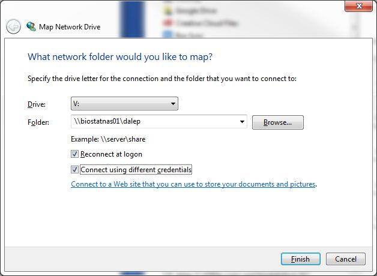
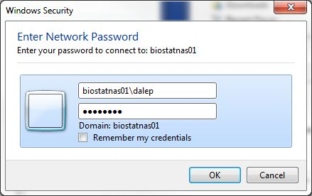
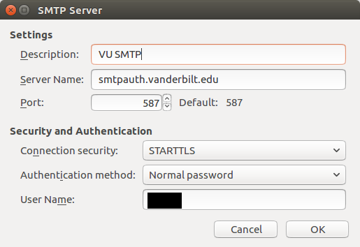
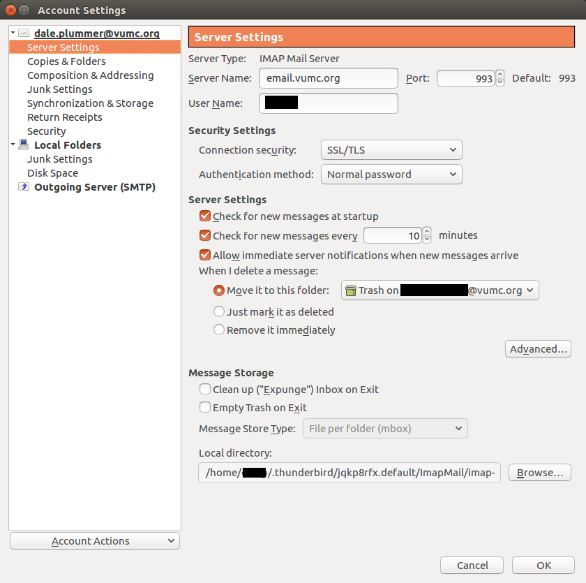
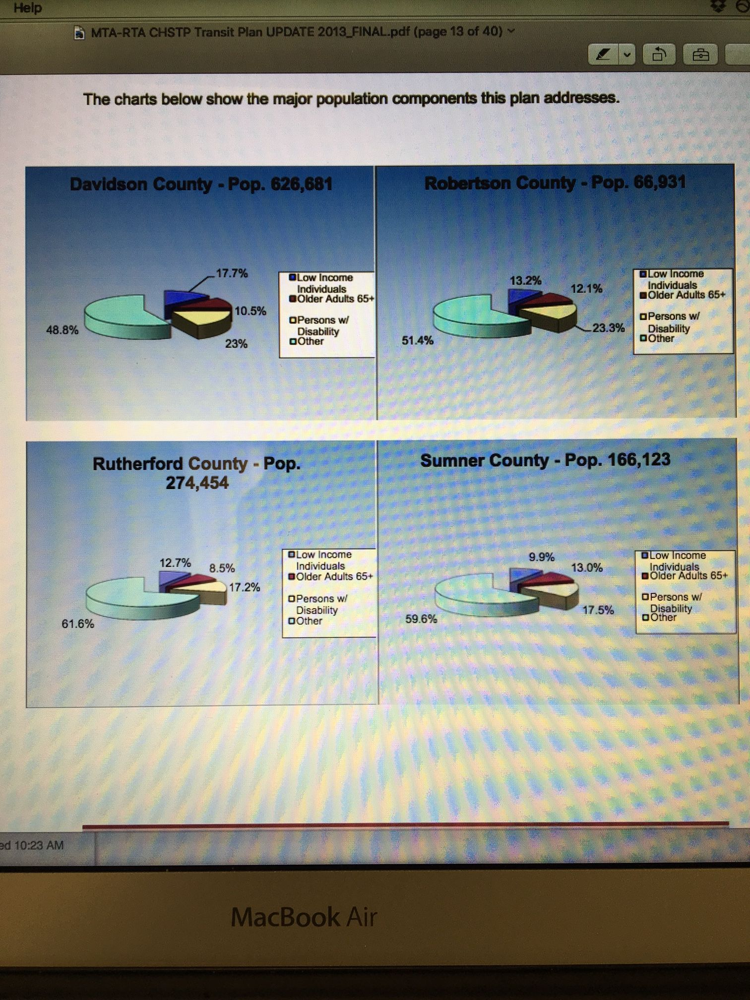

Dale's Notes
This is a bunch of notes that I have collected over time to help me remember stuff. I don't maintain this very well, so some of it may be out of date or wrong. If you are looking for answers a better first stop would be the FAQ pages. SiteToolStatistics WebStatistics- Nashville Breast Cohort (NBC) Repository
- CITI (Collaborative IRB Training Initiative) Program
- Cortex XDR
- Shiny folders and permissions
- VUMC job description database
- IT policy related topics
- New or Extend Sponsored Account (Dual ID) Request
- Join VUMCemployee wifi network Ubuntu 20.04
- Microsoft365R: an R interface to the Microsoft 365 suite
- Teams-SharePoint Service Consultation
- Biostatistics Clinics Notes
- Flexera
- Public facing web sites
- Configuration Item (CI) maintenance
- Bomgar Remote Support from BeyondTrust
- System Setup Procedures
- Servers
- How to "factory reset" an Intuned enrolled Windows computer
- Intune Notes
- Dale's tasks transition meeting notes
- How to register a wiki user
- Requesting an email alias
- EMAIL: Out of Office, Separation Message
- Key codes
- Listserv lists
- On my teams, we facilitate this by creating a slack channel called [new hire]_ASKS with a small team of dedicated watchers that set alerts to all messages
- VUMC Printer Support
- How to use rclone to mount OneDrive share in Ubuntu
- LDAP configurations
- KVM notes
- CTSpedia notes
- The Adobe subscription email says "Here's how to get started with Acorbat Pro DC"
- jabber server
- Add to OU administrators and Pegasus workgroup
- Renew an adjunct/adjoint appointment
- Jeremy's par-asq VM
- Pegasus form to request a consultation regarding the usage of Microsoft services such as Teams
- Website Does Not Load or Displays "Potential Security Risk/Issue"
- Independent Support Provider Forum notes
- Veterans Administration (VA) Access Notes
- Linux DNS Lookup
- CDISC Foundational Standards are the basis of a complete suite of data standards
- How to set up Microsoft Mobile on mobile devices
- Avamar backup server
- Transition to new backup server (Avamar)
- Note on email sensitivity labels and listserv
- F5 VPN Linux command line client
- Things to be checked periodically (monthly, weekly, daily)
- Harrellverse" Favorite Computing Tools
- How to opt out of the "daily Briefing email from Cortana"
- From CTM Application Management Session 1 (3/3/2021)
- Make a file of random printable characters
- VUMC Data Center access notes
- How to release an email from quarantine ( Microsoft Defender false positives)
- How to request a VUMC secondary account (e.g. for students who need access to VUMC resources)
- Promotions Committee
- Jeremy's email re upgrading wiki server
- Virtual Machine Server Notes
- Where to direct Pegasus tickets
- How to get a server configured on the VUMC network
- Exim4
- Fix Ubuntu annoyances
- Wiki DNS notes
- Turn on/off firewall (old scheme)
- Microsoft Office Training
- Virtual Happy Hour list
- Backup tools
- Jabber configuration
- Working Remotely
- Move shares from bio-admin server to NAS
- Command line mount
- /etc/fstab entries
- RODBC and sqlConnect in R
- Open a Pegasus ticket about email
- How to open calendars other than one's own in the Outlook Web App
- Nextcloud Notes
- Outlook 365 start up problems
- PS notes
- Run test instance on my workstation
- Update the git repository after changes have been made
- Deploy to server
- Ansible configuration for PS...
- PS virtual machine
- Setting up the local repository for the first time
(or starting from fresh because you've wrecked your local version) - Working on the code in the local repository
- Updating github repository after making changes on the local computer
- Updating the server
- Pegasus tickets for PS VM
- Useful Linux commands
- MacBook network difficulties with new certificates
- Ransomware notes
- File shares
- DNS set to systemd's 127.0.0.53 - how to change permanently?
- System failing to recover from hibernation (or was it sleep?)
- WorkSpace ONE Mobile Device Management (MDM) software
- How to add shared exchange calendars in Outlook Web Access
- How to add another account to Outlook
- FreeNAS notes
- Datamethods.org and Discourse Server notes
- Outgoing server ports that need to be open for normal operation
- What is the process for downloading and installing Skype for Business on a Macintosh?
- What's that link for Microsoft Office 2016?
- VUMC SRFS system
- Stand-up Desk recommendations
- Some email boilerplate
- Your Windows computer is ready (Intune)
- Your macOS computer is ready (Intune)
- Introduce myself to new faculty/staff
- Wiki account creation or password reset
- No longer have access to vu1file.it.vanderbilt.edu
- Welcome to Biostatistics
- How to get Microsoft Office
- Your Linux desktop is ready
- Your MacBook has arrived (configured)
- Your MacBook has arrived (self-configure)
- Your Windows desktop is ready
- Your Windows laptop is ready
- NAS storage is ready
- Email transition
- Phishing warning
- Subject: statcomp3 account
- Subject: statcomp2 account
- Email for correspondents who send blind links
- Subject: links in email
- "Setting up a new computer at home"
- Replacement computer (admin)
- How to map (or mount) a network share
- Video collaboration tools
- Jeff's old VUNetID Apache2 authentication plugin doesn't work anymore
- Docker notes
- How do I make a compressed archive using tar?
- How do I restore a compressed archive using tar?
- Log of a Skype conversation about NAS backups
- Set up a new folder on department NAS
- Set email forwarding on public folders
- How to purchase, request, and install a new SSL certificate
- SSL certificate checks
- New employee IT check list
- Moving administrative shares
- What do you do when someone wants proof "that your institution has the capacity to protect shared data, and will comply with NIH Genomic Data Sharing Policy"?
- Pendragon Server (bio-app-s1)
- How to configure nginx with ssl
- Links to wiki topics about templates
- How to use Vanderbilt's streaming video server
- Network Speeds
- Where can I get a summary of the department's facilities and resources?
- How to get SAS to run on Ubuntu 16.04.
- https://vbiostat.slack.com/files/daleplummer/F1FUD4GVA/Accessing_box_com_and_alfresco_file_repositories
- Where is the mount point for smb shares mounted using Nautilus?
- Lubuntu/Documentation/RemoveOldKernels
- Archive email with Thunderbird
- Server configuration notes
- gitlab notes
- SoftMaker Office 2016
- Old and new DNS server names
- What should I do when I get the KEYEXPIRED error message after an apt-get update?
- N2QOD - topic for IT related items in the N2QOD project : N2qodIT
- tcpdump is amazing
- Docker Notes
- Reproducibility and Repeatability
- Links relating to SSL for Shiny Server open source edition
- Ricoh MP C4503 installation for Linux
- Ricoh MP C4503 installation for Windows
- Getting Started at Vanderbilt Biostatistics
- RLanguage Notes
- OSX Notes
- AlfrescoNotes
- BoxComNotes
- How to install graduate student printer on Macintosh computers
- Installing Department Printers for Windows Computers
- Installing Macintosh Printers using the Command Line
- Installing Linux Printers using the Command Line
- Vanderbilt Administrator's Resource
- Dale's Collection of Stata Code Examples
- IT Team Skills
- Steps to use the Apple TV
- Apple TV notes
- Biogradprinter1Setup
- Backup for Macintosh computers
- Shiny Presentation Notes
- Admin User
- Some Alfresco links that look interesting:
- Links to Kronos Quick Reference Guides
- Shared Exchange Mailbox (SEM) information
- Introduction to Unix (from ACCRE)
- I can never remember environment variable commands
- Cool Shiny App Examples
- IT Team Skills
- A nice cryptography explanation
- A nice post about public speaking
- Simple git Guide
- Change Ubuntu password using Live CD
- IMAP, SMTP, and LDAP configuration as of 21 Oct 2011
- Thunderbird Configuration Screenshots
- Helpful commands to look at auth logs for break-in attempts:
- SoftMaker
- Groovy coloring advice for maps
- feh - image viewer and cataloguer
- Connecting to Linux desktop from a remote location (FreeNX)
- An rdesktop command that I like
- How can I connect to a Microsoft DFS directory (as opposed to a simple Windows share)?
- Install Pendragon server software using a non-default database instance
- Printer network addresses
- Printer consumables
- Printer consumable replacement log
- Access restrictions
Nashville Breast Cohort (NBC) Repository
CITI (Collaborative IRB Training Initiative) Program
- https://www.citiprogram.org/
- I have 2 affiliations
- Nashville, TN-626 (VA related)
- Vanderbilt University (VUMC related)
Cortex XDR
The Cortex XDR agent should be installed on Linux and non-Intune-enrolled macOS systems. On Intune enrolled macOS systems, antivirus software is installed when the Company Portal is used.
Installation
- Request an installation package using Pegasus form "Request Security Agent" https://pegasus.vumc.org/request/start/10949
- When available, download and unzip/untar the installation materials
- Read the README.md file and follow the instructions.
- Linux
- See https://docs-cortex.paloaltonetworks.com/r/Cortex-XDR/8.2/Cortex-XDR-Agent-Administrator-Guide/Install-the-Cortex-XDR-Agent-for-Linux
- tldr:
sudo apt install ./cortex-8.2.2.121847.deb - Check status
-
sudo /opt/traps/bin/cytool last_checkin -
sudo /opt/traps/bin/cytool status
-
- macOS
Cortex XDR is the antimalware tool mandated for use by the VUMC Enterprise Cybersecurity group. "The Cortex XDR agent protects Linux servers by preventing known and unknown malware from running by halting any attempts to leverage software exploits and vulnerabilities to compromise the server."
Request a Cortex client uninstall
- submit a Pegasus incident using the CI: VEC-SOC-CORTEX
Contact
I have been in contact with Joshua Lutz via Teams about this tool.Joshua Lutz Principal Security Analyst VEC Security Operations&Svcs - 108042 +1 (615)343-2251 joshua.lutz@vumc.orgLinux systems Google doc - https://docs.google.com/spreadsheets/d/1V_jIvPBThaeYrR-huA2Ffjs_-ay9t2SzPcwSzrmLKzY/edit#gid=1430024970
Shiny folders and permissions
The Shiny app is developed and tested on the user's workstation. When ready, the app's files are transferred to a folder on statcomp2 (i.e.~/ShinyApps/app-name. where "app-name" is the desired name for the app)
On statcomp2, "Link" the app so the server can find it. After the app is linked the URL is https://statcomp2.app.vumc.org/app-name
cd /srv/shiny-server/ sudo ln -s /home/user/ShinyApps/app-nameHere is an example of a very simple app. Some apps may have many more files and folders.
$ tree ShinyApps/app-name/
ShinyApps/app-name/
|---README.md
|---server.R
|---ui.R
|---www
|---citation.html
After the user has moved their files to statcomp2, we frequently have to adjust the permissions to get it to work. Directory and file permission for this simple app.
drwx-----x 6 user user 4096 Jun 15 2020 ShinyApps/
drwx-----x 3 user user 4096 Feb 28 2018 app-name/
-rwx---r-- 1 user user 0075 Feb 28 2018 README.md*
-rwx---r-- 1 user user 3024 Feb 28 2018 server.R*
-rwx---r-- 1 user user 3617 Feb 28 2018 ui.R*
drwx---r-- 2 user user 4096 Feb 28 2018 www
-rwx---r-- 1 user user 0425 Feb 28 2018 citation.html*
chmod calculator
chmod 701 produces rwx-----x chmod 704 produces rwx---r--
VUMC job description database
IT policy related topics
New or Extend Sponsored Account (Dual ID) Request
Pegasus form to request a new or existing Sponsored Account at VUMC or VU. https://pegasus.vumc.org/request/start/1601/Process for requesting VUMCids for graduate students
Once we have the VUnetIDs for a class of incoming students, a Pegasus request can be made for VUMCids for these students. It is handy to request these IDs in a batch since only one request is required. The accounts will come up for renewal at the same time, simplifying that process, too. These "dual ids" are also called "sponsored accounts" and are granted for 1 year and are renewable. The Pegasus form to request a sponsored account is https://pegasus.vumc.org/request/start/1601/. Policy and additional information is available.Join VUMCemployee wifi network Ubuntu 20.04
The documented procedure is to join the VUMCemployeesetup first and a web browser window will open with further instructions. As of July 5, 2023, this does not work. I can successfully connect to the vumcemployeesetup network and download and extract the Cloudpath-x64.tar.bz2 tarball. When I run Cloudpath-x64, it takes my credentials, churns through a couple of steps and stops with the error "The configuration provided by the network administrator is not valid on this operating system."A workaround is to join the VUMCemployee network and enter the configuration settings manually.
- Make sure the network cable is not connected to the computer
- Boot (or reboot) the computer and log on
- Make sure wifi is turned on
- If a wifi connection is started automatically, "forget" that network
- Attempt a connection to the VUMCEmployee wifi network (not VUMCEmployeeSetup)
- Complete the Wi-FI Network Authentication Required" form (see below) and click Connect
Microsoft365R: an R interface to the Microsoft 365 suite
Teams-SharePoint Service Consultation
- https://pegasus.vumc.org/request/start/5841 - Use this form for non-urgent requests related to Teams and SharePoint Online, such as a request for consultation or to establish a new SharePoint site with specific functionality enabled like public links.
Biostatistics Clinics Notes
Notes concerning support for the Biostatistic Clinics - https://biostat.app.vumc.org/wiki/Main/Clinics- Booking is done with a web app - https://www.youcanbook.me
- Gmail is used to send notifications to clients and clinic staff.
- log on to the clinic email account biostatisticsclinics@gmail.com
- Go to Settings -> See all settings
- Clinic staff forwarding addresses must be registered. Click "Forwarding and POP/IMAP" tab and click "Add a forwarding address" to add or remove addresses.
- Go to "Filters and Blocked Addresses" tab to manage the filters (rules) the configure forwarding of email to appropriate clinic staff
Flexera
- What is Flexera? An IT management tool. It looks like VUMC is using it mostly for inventory management. A Flexera agent is installed when a Windows or macOS computer is IT enrolled.
- Flexera is accessed using Single Sign-on through Microsoft My Apps. The URL is https://myapplications.microsoft.com/. Once logged in, you will be presented with a screen of applications you can access, including Flexera. Click the Flexera One icon to pass through to Flexera.
Public facing web sites
- wiki
- Department wiki host. It is running the wiki software "Foswiki".
- The VM is hosted on VUMC IT resources. They call it "bio-wiki1".
- biostat.app.vumc.org [160.129.8.31] (external)
- biostat.emp.vumc.io [160.129.37.119] (internal)
- Department wiki host. It is running the wiki software "Foswiki".
- dbconnect
- This is a VM running the dbconnect app. It is hosted on VUMC IT resources.
- https://biostatdata.app.vumc.org/dbconnect
- biostatdata.gslb.vumc.org [160.129.28.8] (external)
- biostatdata.emp.vumc.io [10.152.140.12] (internal)
- This is a VM running the dbconnect app. It is hosted on VUMC IT resources.
- Power and Sample Size online
- This computer a VM that is hosting Dr. Duponts power and sample size app. It is known variously as
- https://vbiostatps.app.vumc.org/ps/
- 160.129.29.83 (external)
- biostat1553-ps.emp.vumc.io (10.151.20.240) (internal)
- This computer a VM that is hosting Dr. Duponts power and sample size app. It is known variously as
- Shiny apps hosted on statcomp2
Configuration Item (CI) maintenance
- https://pegasus.vumc.org/ViewKnowledge.aspx?id=15308
- Download CI maintenance bulk request template : https://pegasus.vumc.org/KMAttachment.aspx?filename=CI_Maintenance-2021-09-21-111118.xlsx
Bomgar Remote Support from BeyondTrust
The department has a license for the Bomgar remote support software from BeyondTrust (https://www.beyondtrust.com/). Bomgar is the VUMC supported remote tool that allows support technicians to remotely connect to end-user systems through firewalls from their computer or mobile device.- VUMC IT has created a group on the Remote Support server for housing team members. The group is configured with a license pool that covers our license.
- A user consumes a license when the user logs into the console. There is a one-hour idle timeout to prevent users from consuming a license if they are not providing support to a customer.
- We have 1 license for Biostatistics. The license must be renewed annually. The current license is good through 04/30/2024.
- There is a security group "BeyondTrust Team Biostatistics" (nested under biostatisticsOUAdmins security group). This group contains who can use Bomgar.
- Authorized users are:
- Dale
- Bashar
- Shawn
- This Pegasus form: https://pegasus.vumc.org/request/start/181 can be used to add or remove users authorized to use Bomgar.
- See the Pegasus knowledge article https://pegasus.vumc.org/ViewKnowledge.aspx?id=12949 for information about using Bomgar.
- Overstreet, David david.overstreet@vumc.org will give a short overview via Teams if requested. Contact David via email to schedule.
- To install the Representative console, go to https://support.vumc.org/login/my_account and choose Download Representative Console.
System Setup Procedures
Servers
How to "factory reset" an Intuned enrolled Windows computer
- First, in the Intune admin center, submit a Wipe request to have the system removed from Autopilot. Wait for the request to be completed.
- Then, use Pegasus form "Endpoint Administrator Intune Requests" to have the system removed from Autopilot (https://pegasus.vumc.org/request/start/9040/?s=). Choose "Remove Autopilot device from MEM".
Intune Notes
- Intune Admin: Glossary of reference guides for Intune administrators
- Assign device to another user. Two options (You don't need to re-run the script to re-register, just re-pre-provision once the enrolled device is gone.):
- Initiate remote Wipe on the enrolled device from the Intune portal (don't check either box it asks for)
- Under Windows - Microsoft Endpoint Manager admin center
- This will take a while.
- The system will disappear from the list in the portal
- When complete, do the 5-windows key thing at the device's first configuration screen
- Do a local reset AND Delete the enrolled device from Intune portal
- Initiate remote Wipe on the enrolled device from the Intune portal (don't check either box it asks for)
Intune notes for Macintosh systems
- My desktop - BIOSC6HJNF3
- Intune Mac: Assign a MacOS device to an Enrollment Profile - https://pegasus.vumc.org/ViewKnowledge.aspx?id=15672
- Intune Mac: Local Factory Reset - Retain Operating System - https://pegasus.vumc.org/ViewKnowledge.aspx?id=15764
- Intune Mac: Enroll with Company Portal - https://pegasus.vumc.org/ViewKnowledge.aspx?id=15849
Office Hours Notes
- Microsoft Entra admin center - https://entra.microsoft.com
- Flexera
- Questions
- What is the process for an older system that I want to enroll?
- Is there a Pegasus form for requesting addition of a system by serial number? No, send to Patrick Hearn
- How does Company Portal fit? Is it the way we "log on" to Microsoft 365 in some sense? Should one sign on to Company Portal each time one uses the computer? Probably should just log on each time so things stay in sync.
- I don't see C02TX20UHV2Q in the list of devices I can add? No, send to Patrick Hearn
- Will step 6 of https://pegasus.vumc.org/ViewKnowledge.aspx?id=15771 happen if one is not on the VUMC network? This is installed by Apple when the system is purchased by VUMC. It will work anywhere.
- Is there any connection between Pegasus CI and Intune enrollment? Does one flow into another or must both be manually added? NO
- Is there a way to bulk add CI entries? See https://pegasus.vumc.org/request/start/7919/?s=
Dale's tasks transition meeting notes
How to register a wiki user
Because of junk registrations, self-registration for the Biostatistics wiki is not allowed. To register a user do this:- Log on to the wiki (must be an administrator)
- Go to https://biostat.app.vumc.org/wiki/System/BulkRegistration
- Scroll down to the UnprocessedRegistrations section
- Edit the table to list those to be registered and save the table
- Return to https://biostat.app.vumc.org/wiki/System/BulkRegistration
- Scroll down to find and click the "Bulk Register these people" button
Accounts are then created. The wiki creates an initial password that is supposed to be emailed to the new user(s). Unfortunately, the email part doesn't work, so one needs to log on to the wiki server and reset the password to something known.
- Log on to biostat.emp.vumc.io
- Go to the Wiki data directory
cd /home/www/biostat-html/wiki/data/
- Make a copy of the password file for for safety
sudo cp .htpasswd .htpasswdsave
- Make sure the bulk registration actually created the proper entry
grep WikiName .htpasswd
- Set the temporary password for the new user
sudo htpasswd .htpasswd WikiName
- Edit the password file to add the email address for the new user
sudo vim .htpasswdFinally, email the new user. There is some boilerplate in this topic that can be used for that. See DalesNotes
Requesting an email alias
When users request name changes the old one is left as an alias on the mailbox so that people who had the old one saved is still there. For example, when I last returned to VUMC, I automatically got kevin.p.king.1@vumc.org, but I wanted kevin.king@vumc.org back so I submitted a Changing Primary E-mail Address request: https://pegasus.vumc.org/request/start/3530/?s=. But when you look at my "E-mail Addresses" tab in my contact properties you can see I still have kevin.p.king.1@vumc.org as an alias, along with the other system generated addresses, like my vumcid@vumc365.onmicrosoft.com (vumc365.onmicrosoft.com is the name of our production Azure AD tenant / Microsoft 365 subscription).EMAIL: Out of Office, Separation Message
https://pegasus.vumc.org/ViewKnowledge.aspx?id=1022
Key codes
- Entry into Ste 1000- Keypad code 736
- Front door entry into Ste 1020 Keypad code 2017 ( same as Ste 1100)
- Ste 1020 back door (solid wooden door) Keypad code 736
Listserv lists
If there is a listserv problem create an incident for CI: MC-VUMC-LIST-SERVREVIEW biostat-all RCPT - email list of subscribers to biostat-all and ALL sub-lists.
Biostat-all consists of these sublists (and some of the sublists themselves have sublists):
- biostat-staff
- biostat-msstaff
- biostat-rstaff
- biostat-admin
- biostat-it
- biostat-fac
- biostat-phdfac
- biostat-msfac
- biostat-students
- biostat-postdoc
- cqs-managed
On my teams, we facilitate this by creating a slack channel called [new hire]_ASKS with a small team of dedicated watchers that set alerts to all messages
The new hire knows that there are a group of people whose assignment is to answer their questions.VUMC Printer Support
- VUMC Printer Support - https://www.vumc.org/it/printer-support
- Ticket for toner and other consumables - https://pegasus.vumc.org/request/start/8072
How to use rclone to mount OneDrive share in Ubuntu
See- https://itsfoss.com/use-onedrive-linux-rclone/
- Note on fusermount3 syslink: https://forum.rclone.org/t/rclone-1-62-2-fatal-error-failed-to-mount-fuse-fs/37073
- Note about managing startup applications: https://www.makeuseof.com/manage-startup-applications-on-ubuntu/
- VUMC document: https://pegasus.vumc.org/ViewKnowledge.aspx?id=15297 (may be out of date)
If rclone is not already installed...
Download and install$ sudo -v ; curl https://rclone.org/install.sh | sudo bash
Make a mount point for the OneDrive share. This can be any name you like, but if you use something different, make appropriate changes later in this script.
$ mkdir ~/OneDrive
Configure rclone. This is a complete terminal session and all of the input and output is shown. The users input is in red.
$ rclone config
No remotes found, make a new one?
n) New remote
s) Set configuration password
q) Quit config
n/s/q> n
name> remote_vumc
Option Storage.
Type of storage to configure.
Choose a number from below, or type in your own value.
1 / 1Fichier
\ (fichier)
2 / Akamai NetStorage
\ (netstorage)
3 / Alias for an existing remote
\ (alias)
4 / Amazon Drive
\ (amazon cloud drive)
5 / Amazon S3 Compliant Storage Providers including AWS, Alibaba, Ceph, China Mobile, Digital Ocean, Dreamhost, IBM COS, Lyve Cloud, Minio, Netease, RackCorp, Scaleway, SeaweedFS, StackPath, Storj, Tencent COS and Wasabi
\ (s3)
6 / Backblaze B2
\ (b2)
7 / Better checksums for other remotes
\ (hasher)
8 / Box
\ (box)
9 / Cache a remote
\ (cache)
10 / Citrix Sharefile
\ (sharefile)
11 / Compress a remote
\ (compress)
12 / Dropbox
\ (dropbox)
13 / Encrypt/Decrypt a remote
\ (crypt)
14 / Enterprise File Fabric
\ (filefabric)
15 / FTP Connection
\ (ftp)
16 / Google Cloud Storage (this is not Google Drive)
\ (google cloud storage)
17 / Google Drive
\ (drive)
18 / Google Photos
\ (google photos)
19 / Hadoop distributed file system
\ (hdfs)
20 / Hubic
\ (hubic)
21 / In memory object storage system.
\ (memory)
22 / Jottacloud
\ (jottacloud)
23 / Koofr, Digi Storage and other Koofr-compatible storage providers
\ (koofr)
24 / Local Disk
\ (local)
25 / Mail.ru Cloud
\ (mailru)
26 / Mega
\ (mega)
27 / Microsoft Azure Blob Storage
\ (azureblob)
28 / Microsoft OneDrive
\ (onedrive)
29 / OpenDrive
\ (opendrive)
30 / OpenStack Swift (Rackspace Cloud Files, Memset Memstore, OVH)
\ (swift)
31 / Pcloud
\ (pcloud)
32 / Put.io
\ (putio)
33 / QingCloud Object Storage
\ (qingstor)
34 / SSH/SFTP Connection
\ (sftp)
35 / Sia Decentralized Cloud
\ (sia)
36 / Storj Decentralized Cloud Storage
\ (storj)
37 / Sugarsync
\ (sugarsync)
38 / Transparently chunk/split large files
\ (chunker)
39 / Union merges the contents of several upstream fs
\ (union)
40 / Uptobox
\ (uptobox)
41 / Webdav
\ (webdav)
42 / Yandex Disk
\ (yandex)
43 / Zoho
\ (zoho)
44 / http Connection
\ (http)
45 / premiumize.me
\ (premiumizeme)
46 / seafile
\ (seafile)
Storage> onedrive
Option client_id.
OAuth Client Id.
Leave blank normally.
Enter a value. Press Enter to leave empty.
client_id>
Option client_secret.
OAuth Client Secret.
Leave blank normally.
Enter a value. Press Enter to leave empty.
client_secret>
Option region.
Choose national cloud region for OneDrive.
Choose a number from below, or type in your own string value.
Press Enter for the default (global).
1 / Microsoft Cloud Global
\ (global)
2 / Microsoft Cloud for US Government
\ (us)
3 / Microsoft Cloud Germany
\ (de)
4 / Azure and Office 365 operated by 21Vianet in China
\ (cn)
region> global
Edit advanced config?
y) Yes
n) No (default)
y/n> n
Use auto config?
* Say Y if not sure
* Say N if you are working on a remote or headless machine
y) Yes (default)
n) No
y/n> y
2022/06/27 13:52:14 NOTICE: If your browser doesn't open automatically go to the following link: http://127.0.0.1:53682/auth?state=eU6tgGOGfApvrdlZWvWGxQ
2022/06/27 13:52:14 NOTICE: Log in and authorize rclone for access
2022/06/27 13:52:14 NOTICE: Waiting for code...
2022/06/27 13:52:16 NOTICE: Got code
Option config_type.
Type of connection
Choose a number from below, or type in an existing string value.
Press Enter for the default (onedrive).
1 / OneDrive Personal or Business
\ (onedrive)
2 / Root Sharepoint site
\ (sharepoint)
/ Sharepoint site name or URL
3 | E.g. mysite or https://contoso.sharepoint.com/sites/mysite
\ (url)
4 / Search for a Sharepoint site
\ (search)
5 / Type in driveID (advanced)
\ (driveid)
6 / Type in SiteID (advanced)
\ (siteid)
/ Sharepoint server-relative path (advanced)
7 | E.g. /teams/hr
\ (path)
config_type> onedrive
Drive OK?
Found drive "root" of type "business"
URL: https://vumc365-my.sharepoint.com/personal/dale_plummer_vumc_org/Documents
y) Yes (default)
n) No
y/n> y
--------------------
[remote_vumc]
type = onedrive
token = {"access_token":"eyJ0eXAiOiJKV1QiLCJub25jZSI6ImVFM3E0Q0wzbXI2SDR5eUs4S2tmMXZrVmpvY3dZbUc5alVjRW50RFQzY2MiLCJhbGciOiJSUzI1NiIsIng1dCI6IjJaUXBKM1VwYmpBWVhZR2FYRUpsOGxWMFRPSSIsImtpZCI6IjJaUXBKM1VwYmpBWVhZR2FYRUpsOGxWMFRPSSJ9.eyJhdWQiOiIwMDAwMDAwMy0wMDAwLTAwMDAtYzAwMC0wMDAwMDAwMDAwMDAiLCJpc3MiOiJodHRwczovL3N0cy53aW5kb3dzLm5ldC9lZjU3NTAzMC0xNDI0LTRlZDgtYjgzYy0xMmM1MzNkODc5YWIvIiwiaWF0IjoxNjU2MzU1NjM2LCJuYmYiOjE2NTYzNTU2MzYsImV4cCI6MTY1NjM2MTA4MSwiYWNjdCI6MCwiYWNyIjoiMSIsImFpbyI6IkUyWmdZREQ1SGpmUld1UEZpVWxKQjJvUGNQOUsyL2ZNTDBycmdRSmJ2Tm4wajdXUGd5MEIiLCJhbXIiOlsicHdkIl0sImFwcF9kaXNwbGF5bmFtZSI6InJjbG9uZSIsImFwcGlkIjoiYjE1NjY1ZDktZWRhNi00MDkyLTg1MzktMGVlYzM3NmFmZDU5IiwiYXBwaWRhY3IiOiIxIiwiZmFtaWx5X25hbWUiOiJQbHVtbWVyIiwiZ2l2ZW5fbmFtZSI6IldhbHRvbiIsImlkdHlwIjoidXNlciIsImlwYWRkciI6IjE2MC4xMjkuMjUwLjIzNiIsIm5hbWUiOiJQbHVtbWVyLCBEYWxlIiwib2lkIjoiZDQxYjA3MzUtZjk5My00NDFiLTg4Y2ItMjJmNzY4Y2ZlMTA1Iiwib25wcmVtX3NpZCI6IlMtMS01LTIxLTI5MDA5ODc3MzAtMTcwNjU3Mzg4Ny0zMjc5NTkyNTk1LTcwMDciLCJwbGF0ZiI6IjgiLCJwdWlkIjoiMTAwMzNGRkY5REY4MUYwQSIsInJoIjoiMC5BVkVBTUZCWDd5UVUyRTY0UEJMRk05aDVxd01BQUFBQUFBQUF3QUFBQUFBQUFBQlJBSTguIiwic2NwIjoiRmlsZXMuUmVhZCBGaWxlcy5SZWFkLkFsbCBGaWxlcy5SZWFkV3JpdGUgRmlsZXMuUmVhZFdyaXRlLkFsbCBTaXRlcy5SZWFkLkFsbCBwcm9maWxlIG9wZW5pZCBlbWFpbCIsInNpZ25pbl9zdGF0ZSI6WyJpbmtub3dubnR3ayIsImttc2kiXSwic3ViIjoiRllBY3ZIenhzTTJIbFJYYldDeURYY3BEQ2hrQnYwajJvNkhOczFvOTRZbyIsInRlbmFudF9yZWdpb25fc2NvcGUiOiJOQSIsInRpZCI6ImVmNTc1MDMwLTE0MjQtNGVkOC1iODNjLTEyYzUzM2Q4NzlhYiIsInVuaXF1ZV9uYW1lIjoiZGFsZS5wbHVtbWVyQHZ1bWMub3JnIiwidXBuIjoiZGFsZS5wbHVtbWVyQHZ1bWMub3JnIiwidXRpIjoiVHVGdGEtQnVYMHlySWRDV0RuSEFBQSIsInZlciI6IjEuMCIsIndpZHMiOlsiYjc5ZmJmNGQtM2VmOS00Njg5LTgxNDMtNzZiMTk0ZTg1NTA5Il0sInhtc19zdCI6eyJzdWIiOiIwV2d0MHNKZjBnd2pzQzR1R0taeWwtTmRqUnZ4TG9DQjZUTDFtblFZbkQ0In0sInhtc190Y2R0IjoxNDY3OTkyMzcwfQ.nDY8kWKEUXkW9gR9jeAGT2CbZ4MV1VvP9oJmhXV5jypPhFmk37rk71ue_IHEwaDA7OggdF17HCTc8Yl9tH5UMteUuT8mtde3_hndtfQyi9o80ZhvUgSHzOpg3cG0JWG7tbGJyyXfRB8fss6a7JFDh927_I18Bg9VncNQley5UsfowHUv-DB577GI6-yiw0EceH6ZynSPIsAEzHxfGb_5FtU1kVSYEgcJ57c29aLH6JaO0xafz2Tee_x_0PG7uwBgjlLMUgDW2ZnhIfYVJj4CNWHLS-1T9gAIRZdTE8Fqi1SnRUNG5ssxxoKyxgNUoplvMLW8xGVgQCuWn8BEyccVhQ","token_type":"Bearer","refresh_token":"0.AVEAMFBX7yQU2E64PBLFM9h5q9llVrGm7ZJAhTkO7Ddq_VlRAI8.AgABAAEAAAD--DLA3VO7QrddgJg7WevrAgDs_wQA9P99eT25jJn_AeheS7HTSOzJsIkBlfQG09uKMPcTRuaPaDva9_Pq_drLe8ErAEyCSs-hITijl4ZbR_cnj6h_IBFUP-30Xl9oTXHvZukUbvI-qBiEneguKqHmNjkXtCGfLdMIl8bnVLwZ-OI__3pRwVYpLb6trTosdlo5NZoexJgu7lxFZHl__ACR2N9imv6af8DfTNEHI0XqfcP3mCDDgTL1eepIob7XXY74ojLP8Pvl8yL2vsguhG3f2xX1vjBLs2LsTFx_Npx_Vgj9gsx9kziPpDktYFZlG4SAQQX5HrbQAIefz6vZfRa58ylF1sv3L-wK1R76wmFlZloShd0ymi7raKZS1fCjFfsryvWFL2nEOLg_7rai3lUlbCcWJPB2qt42lKFFIs0fm9AJk49PqSDggSmRuopzvvJ90VkPOacnWwoCSDHr5Rt8ExZAcNtUitYNjKKLlBN6lhSvg8SROeqVdP12F_MF4K8QKscsYcyugU45uqzYwet5pd4ECg7Nd0Oizerq8qVApOXlMR3JZ0AC0y3uQW6D3OEijRjmMr_WKf-qZkSh5j7-SRxpoQE1zYJ1WdMZ_-gSvPJSyP_He28osiTLImM2bZtpjbWp8505j6nitXiXAbR7aa1DScYTSKs6HB2pQ3VTz1LvYD_LR8ACMbaVlhJ6ANdaoluX82hkYvp6LojRnJLjbn9bNVmlzxUdRtiPCrx2T0RxeM3yqpSkQmcMqfAzfxy9-BjX2KNACYm8O4YRludc6SXsESTyWxzxiKT7e874m8ptWP8","expiry":"2022-06-27T15:18:01.081049274-05:00"}
drive_id = b!rQ1BSNglrESx0BaL3OI3ElRVRM0SKdNAqX_mwl1pxTNxgi1ynclWRr7DSfS1He2D
drive_type = business
--------------------
y) Yes this is OK (default)
e) Edit this remote
d) Delete this remote
y/e/d> y
Current remotes:
Name Type
==== ====
remote_vumc onedrive
e) Edit existing remote
n) New remote
d) Delete remote
r) Rename remote
c) Copy remote
s) Set configuration password
q) Quit config
e/n/d/r/c/s/q> q
Mount the OneDrive share
$ /usr/bin/rclone --vfs-cache-mode writes mount remote_vumc: ~/OneDrive/ &
You may get an error message about fuse or fusermount. See if fuse is installed.
$ whereis fusermount fusermount: /bin/fusermount /usr/share/man/man1/fusermount.1.gz
If fuse is not installed, install it. If fuse is installed a symbolic link may be needed.
$ sudo ln -s /bin/fusermount /bin/fusermount3
...and retry the mount.
See if it worked
$ ls -la OneDrive/
The mount will remain active as long as you keep this terminal running. If you'd like to mount the share when the system is booted, add something like the command below to a new entry in Startup Application Preferences.
sh -c "rclone --vfs-cache-mode writes mount remote_vumc: /home/<yourdir>/OneDrive/"
LDAP configurations
- LDAP Environments and Settings - https://pegasus.vumc.org/ViewKnowledge.aspx?id=15401
- ds.vumc.io LDAP Migration Guidance (Cookbook) - https://pegasus.vumc.org/ViewKnowledge.aspx?id=15402
- Nextcloud - https://vbiostat2.app.vumc.org/index.php/settings/admin/ldap
- Alfresco - /opt/alfresco-5.1.g/tomcat/shared/classes/alfresco-global.properties
KVM notes
- https://fabianlee.org/2019/04/01/kvm-creating-a-bridged-network-with-netplan-on-ubuntu-bionic/
- https://fabianlee.org/2018/08/27/kvm-bare-metal-virtualization-on-ubuntu-with-kvm/
- https://askubuntu.com/questions/1111768/how-do-i-configure-dhcp-bridge-with-netplan-for-kvm-on-ubuntu-18-04-lts
- https://www.aptgetlife.co.uk/setting-up-a-kvm-host-on-ubuntu-18-04-with-bridged-networking/
CTSpedia notes
sed command to fix attachment linkssed -ibackup -r 's_https://www.ctspedia.org/wiki/pub/CTSpedia/([0-9a-zA-Z]+)/([0-9a-zA-Z]+)._https://www.ctspedia.org/CTSpedia/\1.attachments/\2._'g StatToolsTopic003.html
- https://ctspedia.org is hosted at https://www.netlify.com/.
- Deploys from github.com/wdplummer75/CTSpediaStatic.
- Updates to the github repository are automatically published to the site.
- https://websiteforstudents.com/setup-foswiki-platform-on-ubuntu-18-04-16-04-with-nginx/
- VM host - biostat1478.dhcp.mc.vanderbilt.edu [10.151.20.51]
- git@github.com:wdplummer75/CTSpediaStatic.git
# after git clone, do these steps to configure
cd ~/CTSpediaStatic
git config --global daleplummer@gmail.com
git config --global user.email "wdplummer75@gmail.com"
git config --global user.name "Dale Plummer"
git remote add origin git@github.com:wdplummer75/CTSpediaStatic
git config remote.origin.url git+ssh://git@github.com/wdplummer75/CTSpediaStatic
git config --global color.ui auto
git config -l
git status
# set up to do public/private key authentication for repository
# updates.
ssh-keygen -t ed25519 -C "wdplummer75@gmail.com"
sh-add ~/.ssh/id_ed25519
nano ~/.ssh/config # add this line
IdentityFile ~/.ssh/id_ed25519
ssh -T git@github.com
# Then make a test file and try a commit
cd ~/CTSpediaStatic
touch test.txt
git add test.txt
git commit -m "add test file"
git push
static - http://biostat1478.dhcp.mc.vanderbilt.edu/CTSpedia/StatToolsTopic051.attachments/Rochester_GEEZIP_Example.sas live - https://www.ctspedia.org/wiki/pub/CTSpedia/StatToolsTopic051/Rochester_GEEZIP.sas http://biostat1478.dhcp.mc.vanderbilt.edu/CTSpedia/StatToolsTopic051.attachments/Rochester_GEEZIP.sas https://www.ctspedia.org/wiki/pub/CTSpedia -> http://biostat1478.dhcp.mc.vanderbilt.edu/CTSpedia
https://www.ctspedia.org/wiki/pub/CTSpedia/AUCGEE/AUCGEE.sas https://ctspedia.org/CTSpedia/AUCGEE.attachments/AUCGEE.sas https://www.ctspedia.org/wiki/pub/CTSpedia/AUCGEE/AUCGEE.sas \/wiki\/pub\/CTSpedia\/AUCGEE.SAS ---> \/CTSpedia\/AUCGEE.attachments\/AUCGEE.sas \/pub/CTSpedia\/AUCGEE\/AUCGEE.sas ---> \/AUCGEE.attachments\/AUCGEE.sas :%s/\/pub\/CTSpedia\/AUCGEE\/AUCGEE.sas/\/AUCGEE.attachments\/AUCGEE.sas/ghttp://biostat1478.dhcp.mc.vanderbilt.edu/foswiki/ http://biostat1478.dhcp.mc.vanderbilt.edu/CTSpedia/WebHome.html Example search and replace to fix path to attachments
old: https:\/\/www.ctspedia.org\/wiki\/pub\/CTSpedia\/StatToolsTopic048\/ new: https:\/\/ctspedia.org\/ctspedia\/StatToolsTopic048.attachments\/ old: https:\/\/www.ctspedia.org\/wiki\/pub\/CTSpedia\/MWWComplete\/ new: https:\/\/ctspedia.org\/ctspedia\/MWWComplete.attachments\/ old: http://www.ctspedia.org/wiki/pub/ReviewsBERD/WebHome/developing_biostat_units_2012-2-4.pdf new: https://ctspedia.org/reviewsberd/WebHome.attachments/developing_biostat_units_2012-2-4.pdf
The Adobe subscription email says "Here's how to get started with Acorbat Pro DC"
jabber server
We are using ejabberd. See https://www.process-one.net/en/ejabberd/10/31/2023 - The ejabberd server is not starting when bio-wiki1 is booted.
- Start the jabber server:
ejabberdctl statusorsudo systemctl start ejabberd - Server status:
ejabberdctl statusorsystemctl status ejabberd - Help for ejabberdctl command:
ejabberdctl
Add to OU administrators and Pegasus workgroup
It looks like you want to add new users to your workgroup in Pegasus and perhaps change the workgroup manager. We have a request form for that, but I can convert this incident to the request if that would help. I need to know who you want to add and what permissions they need. You currently have three other members of the workgroup.- Cole Beck beckca (WS2 role, can work Incidents and Change tickets and create CIs)
- Shawn Garbett garbetsp (WS2 role, can work Incidents and Change tickets and create CIs)
- Jeremy Stephens stephej1 (WS2, RA, RB roles, can work Incident, Request and Change tickets and build request forms same role you have)
I do see that you are the only one that can submit the request form for rules. You will need to submit this request to get others access to the workgroup: VEC SECURITY OPERATIONS AND SERVICES FIREWALL RULE REQUESTER AUTHORIZATION I think VEC Security assigns some training and when that is completed, then someone from their group contacts our group to add the user to the VUMC Authorization workgroup.
Admin OUs I think that workgroup VEC Directory Services (manger - Mark Tomlinson) handles the Admin OUs.
Thanks,
Renew an adjunct/adjoint appointment
Use the form https://pegasus.vumc.org/request/start/6465 to request renewal of adjunct/adjoint accounts.Dale, Since this account was in NONLIFE_SERVICE_DELETE state I had to locate the original email address used to invite them this is a lucky break that I was able to find that information in the system at all. Please include that information and use the appropriate form in Pegasus going forward: https://pegasus.vumc.org/request/start/6465 You may reference the guide here: https://pegasus.vumc.org/ViewKnowledge.aspx?id=21 I was able to restore password services, which will require Dr. Saville to follow the instructions provided to enroll in MFA first as it is required to be enrolled in MFA before access to the VPN or password changes, as well as many other accesses are permitted. Always include a good known external email address for any account change going forward. Hopefully, the one where he received the original invitation is still a working email address. We found it to be ben@berryconsultants.net Thank you, Mark Bloss
Jeremy's par-asq VM
Contacts- George, Michael <michael.george@vumc.org>
- Gracey, Kathy <kathy.gracey@vumc.org>
Someone I work with named Michael George may need an R application I wrote to be restarted while I'm on vacation. The app is running on biostatdata. Here are the commands to run: ssh biostatdata.emp.vumc.io sudo -u parasq -i cd app4 ./run.sh That should do it. This runs a standalone web server in R, and it's proxied to by Apache here: https://biostatdata.app.vumc.org/par-asq-2022/ This URL uses LDAP authentication using an Apache module. I gave you access in case you need to check to see if it's up and running. You'll need to login first in order to see if the app is up. Hopefully you won't have to do anything. Usually the only reason to have to restart the app is if biostatdata reboots. I'll tell Michael to e-mail you if it goes down.
Pegasus form to request a consultation regarding the usage of Microsoft services such as Teams
Website Does Not Load or Displays "Potential Security Risk/Issue"
- See Pegasus knowledge article - https://pegasus.vumc.org/ViewKnowledge.aspx?id=15178
Independent Support Provider Forum notes
- OneDrive Migration survey - https://forms.office.com/pages/responsepage.aspx?id=MFBX7yQU2E64PBLFM9h5q5hevzALqYhAg30skL_BH3pUN1BVSFhMQ0E3SU85WlBLMEpNUDNPM0pUTi4u
- OneDrive file migration lookup tool - https://www.vumc.org/it/et-userlookup
- Sync contacts for iOS - https://www.vumc.org/it/sites/default/files/ET%20-%20BYOD%20-%20Doc%20-%20set%20up%20guide%20-%20Contact%20Sync.pdf
- New backoffice software vendor - https://www.workday.com/
Notes from Group Management Self Service training
Williams, Nancy A <nancy.a.williams@vumc.org> was the presenter.
- Group management tool https://groups.service.vumc.org/user/
- Microsoft 365 Groups - Overview and Expiration Policy https://pegasus.vumc.org/ViewKnowledge.aspx?id=14737
- Group Management Tool Modify Group https://pegasus.vumc.org/ViewKnowledge.aspx?id=15216
- Group Management Tool Create Group -- https://pegasus.vumc.org/ViewKnowledge.aspx?id=15218
- Helpdesk: ds.vumc.io Group Guide -- https://pegasus.vumc.org/ViewKnowledge.aspx?id=15219
- VUMC Group Standards -- https://pegasus.vumc.org/ViewKnowledge.aspx?id=15220
- Join Group in ds.vumc.io on premise -- https://pegasus.vumc.org/ViewKnowledge.aspx?id=15221
VEC Directory Services Group Creator Role Request (draft) https://pegasus.vumc.org/request/?id=R00758295 https://www.vumc.org/it/group-management
Use a ticket to "directory services" if help is needed
Veterans Administration (VA) Access Notes
See https://digital.va.gov/employee-resources/remote-access/azure-virtual-desktop/. This page describes a remote desktop connection method called Azure Virtual Desktop. I installed and configured this on my computer. Some notes:- Under Remote Desktop Client Installation, be sure to follow the instructions for Personal Device Users. The Remote Desktop app to be installed is different than the Remote Desktop Connection app that is probably already installed on your computer.
- When asked to sign in, use your VA email address.
- Some of the screens I saw were a little different than those in these instructions, but not enough to cause too much confusion. The main point is that we sign in with a certificate rather than a password.
- I didnt have to uninstall anything before setting up the Azure Virtual Desktop.
Linux DNS Lookup
CDISC Foundational Standards are the basis of a complete suite of data standards
How to set up Microsoft Mobile on mobile devices
Avamar backup server
The Avamar backup system (operated by VUMC IT) is being used to take backups of biostat1553 and the VMs bio-wiki1, biostatdata, and ctspedia.Biostat1553 is a physical server and is the backup staging server for Linux workstation backups. It runs the Avamar agent. Individual files may be restored from this machine.
bio-wiki1, biostatdata, and ctspedia are VMs. Their backups are of the VM as a whole so the whole VM must be restored if a restoration is necessary.
- Avamar console: https://a11bu.hs.it.vumc.io/aui
- For username use "VUMCid@ds.vanderbilt.edu".
- Avamar server domain [clients]:
- VUMC.LINUX.AGENT/DivisionofBiostatistics (biostat1553)
- vvc1002op.hs.it.vumc.io/Biostatistics (bio-wiki1, biostatdata, ctspedia)
Access to the Avamar console is controlled by membership in an LDAP group called adm_bio (LDAP Domain is "ds.vanderbilt.edu"). VUMC Enterprise Cybersecurity (VEC) maintains this group and they would need to be contacted to add or remove members. (info about how to request a membership change is needed)
Transition to new backup server (Avamar)
Sometime around December 1, 2021, the Avamar backup folks changed the name of their server, and our backups didn't run for a while. It turns out we needed to re-register the Avamar client to get it going again. It would have been nice if they had let us know. Below is some output from my server re-registration.biostat@biostat1553:~$ cd /usr/local/avamar/bin biostat@biostat1553:/usr/local/avamar/bin$ sudo ./avregister [sudo] password for biostat: === Client Registration and Activation This script will register and activate the client with the Administrator server. Enter the Administrator server address (DNS text name or numeric IP address, DNS name preferred): a11bu.hs.it.vumc.io Enter the Avamar server domain [clients]: /VUMC.LINUX.AGENT/DivisionofBiostatistics Synchronizing state of avagent.service with SysV service script with /lib/systemd/systemd-sysv-install. Executing: /lib/systemd/systemd-sysv-install enable avagent avagent.d Info: Stopping Avamar Client Agent (avagent)... avagent.d Info: Client Agent stopped. avagent Info <5008>: Logging to /usr/local/avamar/var/avagent.log avagent.d Info: Client activated successfully. avagent.d Info: Client Agent service started in systemd avagent Info <5008>: Logging to /usr/local/avamar/var/avagent.log avagent Info <5417>: daemonized as process id 151496 avagent.d Info: Client Agent started. Synchronizing state of avagent.service with SysV service script with /lib/systemd/systemd-sysv-install. Executing: /lib/systemd/systemd-sysv-install enable avagent avagent.d Info: Stopping Avamar Client Agent (avagent)... avagent.d Info: Client Agent stopped. Registration Complete. biostat@biostat1553:/usr/local/avamar/bin$
- How to Install and Configure an NFS Server on Ubuntu 20.04
- I've been working with jordan.van.biljon@vumc.org to set up Avamar backup client
- Tickets
- Ticket for static ip address: R00736119
- Ticket to request backup services: R00736180
- Avamar backup is being used. See these directories:
/usr/local/avamar/ /var/avamar/
Set up script
on biostat1553sudo addgroup --gid GIDnnn VUMCid sudo useradd --create-home --shell "/bin/bash" --uid UIDnnn --gid GIDnnn VUMCid && sudo passwd VUMCid sudo vim /etc/passwd sudo mkdir /home/wsbu/VUMCid ll /home/wsbu sudo chown VUMCid.VUMCid /home/wsbu/VUMCid ll /home/wsbu sudo touch /home/wsbu/VUMCid/test.txton user's workstation
cat /etc/fstab sudo vim /etc/fstab sudo umount /biostat/cvs/admin sudo umount /biostat/backup/VUMCid sudo mount /biostat/cvs/admin sudo mount /biostat/backup/VUMCid sudo ls -la /biostat/cvs/admin/ sudo ls -la /biostat/backup/VUMCid/ sudo touch /biostat/backup/VUMCid/test.txt sudo ls -la /biostat/backup/VUMCid sudo crontab -u VUMCid -l
- On new backup server (biostat1553.emp.vumc.io), for each user...
- create a new user account (username=vumcid) using the same gid & uid as is on the old backup server (biostat3)
- Copy the user's line from the /etc/passwd file on biostat3
- use the
newuserscommand with the /etc/passwd line copied
- make sure the new account's shell is set to
/bin/falseto prevent interactive login - create a directory
/home/wsbu/vumcid("wsbu" is an acronym for "workstation backup")
- create a new user account (username=vumcid) using the same gid & uid as is on the old backup server (biostat3)
- On the user workstation
- Change /etc/fstab mounts
-
biostat1553.emp.vumc.io:/home/cvs/admin /biostat/cvs/admin nfs rsize=8192,wsize=8192,timeo=14,intr 0 0 -
biostat1553.emp.vumc.io:/home/wsbu/vunetid /biostat/backup/vunetid nfs rsize=8192,wsize=8192,timeo=14,intr 0 0
-
- unmount shares
-
sudo umount /biostat/cvs/admin -
sudou mount /biostat/backup/vumcid
-
- remount shares
-
sudo mount /biostat/cvs/admin -
sudo mount /biostat/backup/vumcid
-
- Check that the mounts worked
-
sudo ls -la /biostat/cvs/admin -
sudo ls -la /biostat/backup/vumcid
-
- Make sure there is a crontab entry like
mm hh * * * /biostat/cvs/admin/sbin/run-user-cron(probably should test this job)
- Change /etc/fstab mounts
biostat@biostat1553:~$ sudo /usr/local/avamar/bin/avregister === Client Registration and Activation This script will register and activate the client with the Administrator server. Enter the Administrator server address (DNS text name or numeric IP address, DNS name preferred): 10.99.64.10 Enter the Avamar server domain [clients]: /VUMC.LINUX.AGENT/DivisionofBiostatistics Synchronizing state of avagent.service with SysV service script with /lib/systemd/systemd-sysv-install. Executing: /lib/systemd/systemd-sysv-install enable avagent avagent.d Info: Stopping Avamar Client Agent (avagent)... avagent.d Info: Client Agent stopped. avagent Info <5008>: Logging to /usr/local/avamar/var/avagent.log avagent.d Info: Client activated successfully. avagent.d Info: Client Agent service started in systemd avagent Info <5008>: Logging to /usr/local/avamar/var/avagent.log avagent Info <5417>: daemonized as process id 84025 avagent.d Info: Client Agent started. Synchronizing state of avagent.service with SysV service script with /lib/systemd/systemd-sysv-install. Executing: /lib/systemd/systemd-sysv-install enable avagent avagent.d Info: Stopping Avamar Client Agent (avagent)... avagent.d Info: Client Agent stopped. Registration Complete. biostat@biostat1553:~$Email from John Ritter
Hello Dale, We can get you started. First thing for you to do is to complete a Pegasus request ticket: VUMC IT STORAGE - GENERAL REQUEST Pegasus - Submit Request (vumc.org) Fill it out as best you can. In particular, we will need the hostname/IP address. Let us know how much data you are backing up, the day change rate (%), and so on. We can work with you on this. Once that is done, we will have you download the client code from the Avamar server and install and configure it. Jordan and I can help you with this. We will also need to put in a firewall request based on your IP to the firewall team to open certain TCP ports between the client an the server. This sometimes takes a day or two. But this should get us started. I am sure we both will have questions as we dig into it. Thanks, John
Note on email sensitivity labels and listserv
In my testing, it appears that an email sent to a listserv address with one of the sensitivity labels does preserve that label (and the associated restrictions). However, I dont think it is a good idea to send sensitive email via the listserv. The main issue is that an email sent to a listserv address is, by design, relayed to more than one address and the sender doesnt know who will ultimately receive the message. It is better to send such emails to specific people.F5 VPN Linux command line client
- Start the client
/usr/local/bin/f5fpc -s - Status about the client
/usr/local/bin/f5fpc --info - Disconnect and stop the client
/usr/local/bin/f5fpc -o
dalep@biostat1371:~$ /usr/local/bin/f5fpc
Usage: f5fpc <command> [arguments]
Valid commands are:
-s, --start [arguments] :Starts connection with SSL VPN server
-o, --stop [arguments] :Disconnects from SSL VPN server and close favorite sessions
-i, --info :Get Information about connection
-h, --help :display this help or command specific help
-v, --version :display version number of the utility
'--start' command arguments:
-b, --nonblock :In non-blocking CLI returns immediately, --info gives status, optional
-t, --host [https://]<host>[:port][/uri] :host name, no defaults, required
-u, --user <username> :user name, optional
-p, --password <password> :password, optional
-U, --userhex <hexUsername> :hex encoded user name, optional
-P, --passwordhex <hexPassword> :hex encoded password, optional
-r, --cert <certificate> :client certificate, optional
-k, --key <key> :client certificate's key, optional
-y, --keypass <keyPassword> :password for SSL certificates, optional
-a, --cacert <CAcertificate> :Trusted CA certificate, optional, see NOTES
-d, --cacertdir <CAcertificateDir> :Directory where trusted CA certificate resides, optional, see NOTES
-x, --nocheck :Server certificate will not be verified for trust, optional, see NOTES
-n, --fname <fname> :favorite name (fav-Name) returned by --info command, optional
-f, --fid <fid> :favorite ID returned by --info command, optional
-S, --sessionid <SessionID> :ID of a pre-established session, read SessionID from stdin if '-' is specified. NOT IMPLEMENTED
-q, --quiet :Don't show UI. NOT IMPLEMENTED
-l, --loglevel <Level> :log level, values are 0 - 128 (DEBUG). NOT IMPLEMENTED
-R, --proxy <XML> :XML formatted string (use -F to specify file instead). NOT IMPLEMENTED
-F, --proxyFile <file> :proxy settings file. NOT IMPLEMENTED
NOTES:
If -a or -d is specified then server cert will be validated for trust against these.
If -a and -d are not specified then default location ( /etc/ssl/certs ) is checked for trust.
And -x switch can be used if server certificate check is not desired (Not recommended)
To import server's certificate from an untrusted CA:
1. Put it in any directory (e.g. /any/dir/) and use c_rehash utility (from openssl)
2. Goto that directory ("cd /any/dir/") and run utility ("c_rehash ./")
Also you can simply use --cacert option to avoid certificate import.
'--stop' command arguments:
-f, --fid <fname> :ID of favorite to terminate, optional
-n, --fname <fid> :favorite name (fav-Name) returned by --info command, optional
'--info' command arguments:
No arguments required in this command.
It displays connection status and favorites status.
Things to be checked periodically (monthly, weekly, daily)
- Alfresco disk space
- Backup server disk space
- Nextcloud disk space
- Nextcloud backup
- PS Online backup
- Logwatch emails
- Backup-userhome emails
- TIBs backup status
- Wiki server disk space
- Avamar backup status
- Datamethods disk space
- Datamethods backup status
- Datamethods updates
- Biostatdata disk space
- Statcomp2 disk space
- Statcomp3 disk space
- Check VA email
Harrellverse" Favorite Computing Tools
How to opt out of the "daily Briefing email from Cortana"
From Kevin King (via Teams): "If they feel more comfortable with a URL you'd provide you can share this as the portal to opt out: https://cortana.office.com/ "From CTM Application Management Session 1 (3/3/2021)
- https://vumc.pvcloud.com/ng/ctm Applications - Planview Enterprise One Capability and Technology Management
- Email Byrd, Jeff <jeff.byrd@vumc.org> or Solomon, Charlie <charlie.solomon@vumc.org> with questions
- https://confluence.mc.vanderbilt.edu/display/EAI/EA+Inventory+User+Documentation
- https://pegasus.vumc.org/request/start/648/?s=
- https://tableau.app.vumc.org/#/site/VUMCAnalytics/views/EAInventoryPortal/EAInventoryPortalGrid
Make a file of random printable characters
dd if=/dev/urandom bs=1024 count=1 | base64 > random.txt
VUMC Data Center access notes
- VUMC Data Center Access Policy https://pegasus.vumc.org/ViewKnowledge.aspx?id=13393
- VUMC DATA CENTER ACCESS REQUEST https://pegasus.vumc.org/request/discover/info/?id=1221
- VUMC DATA CENTER ACCESS REQUEST FORM https://pegasus.vumc.org/request/start/4643
How to release an email from quarantine ( Microsoft Defender false positives)
In my experience, the best way to fight Microsoft Defender false positives is with the https://security.microsoft.com/homepage web site. There, one can review quarantined messages without waiting for the quarantine summary emails. If you find a false positive and release it to your inbox, be sure to check the Report to Microsoft to improve detection checkbox. That is supposed to help train the AI they use for spam detection.Hi ???, Sorry you are having trouble with the email security software. This is common. Here are steps for VUMC users. * Go to https://security.microsoft.com and sign in. Click on Email & collaboration and Review. Then click Quarantine. This will give you a list of your quarantined messages. * Select a message that is inappropriately quarantined. * In the panel that opens for that message, click on Release email. * Check the box Report message as having no threats. * Click the Release message button. The message will be released to your inbox. Checking the Report message as having no threats box should trigger a review of the quarantine rules. You might have to do this a few times, but the system will eventually learn. If you continue to have trouble, let us know and we will put in a Pegasus ticket for additional help. Hope this helps. Dale
- From Price Frazier: "Create a ticket to VUMC IT Cloud Services with the User, and sender of email they feel should not be quarantined and we can look into why this is happening."
- See unquarantine.pdf
How to request a VUMC secondary account (e.g. for students who need access to VUMC resources)
Should include answers to these questions on the Pegasus form. This stuff is not explicitely requested but they always ask for it.Is the research wet lab, dry lab? Requires IRB review/approval? Or both? If IRB reviewed, what are the protocol numbers. Also, who is the VUMC faculty member responsible for oversight of the BRET student?
Promotions Committee
Jeremy's email re upgrading wiki server
... Upgrading from Ubuntu 12.04 to 14.04 was not smooth again, and after reboot, it was the same black screen with blinking cursor. This time, however, I booted from a rescue disk (ubuntu 14.04 server install image), re-installed GRUB from the menu, and it booted.Apache didn't work properly after upgrading to 14.04, but it was because it requires the files in /etc/apache2/sites-enabled to end in *.conf. Once I fixed that, the wiki crashed because of something that changed in Apache2's perl module. Fixing that turned out to be pretty easy.
Upgrading to 16.04 went better, until reboot. Failed to boot again. This time at least there was an error message about failing to boot. Re-installing GRUB from the rescue disk menu (ubuntu 16.06 server install image) failed this time. It didn't help. I did a rescue shell this time and fiddled with some GRUB settings, then installed grub again, and it failed again. It turns out it was failing only when booting from the ISO image and selecting 'Boot from first disk'. Once I disconnected the ISO image, the server booted.
Apache and the wiki software seem to be working okay in 16.04. The Jabber server is currently dead. I spent some time trying to get it to work but one of the components is segfaulting. I'll check it out later. ...
Virtual Machine Server Notes
The virtual machine server is biostat1596.
user root crontab commands for backup of VMs- 01 00 * * * /home/vmbackups/nextcloud-v19/backup-nextcloud-v19-script >> /home/vmbackups/nextcloud-v19/backup-nextcloud-v19-script.log
- 45 03 * * * /home/vmbackups/power-sample-size/backup-power-sample-size-script >> /home/vmbackups/power-sample-size/backup-power-sample-size-script.log
- 00 04 * * * /home/vmbackups/bcc/backup-bcc-script >> /home/vmbackups/bcc/backup-bcc-script.log
- 00 05 * * * /home/vmbackups/bcc/copy-to-backup-server >> /home/vmbackups/bcc/copy-to-backup-server.log
- 15 05 * * * /home/vmbackups/power-sample-size/copy-to-backup-server >> /home/vmbackups/power-sample-size/copy-to-backup-server.log
- 00 06 * * * /home/vmbackups/nextcloud-v19/copy-to-backup-server >> /home/vmbackups/nextcloud-v19/copy-to-backup-server.log
Where to direct Pegasus tickets
- VMs --> Desktop engineering
- VPN/firewall --> VEC Security Operations
- Email issues --> VUMC Collaboration Team
- Box/Teams/OneDrive --> VUMC Cloud Services
- Zoom --> V.A.S.T.
How to get a server configured on the VUMC network
- VUMC IP ADDRESS REQUEST; example R00501984
- Create a New CI (on Pegasus CI tab, click "New CI")
- VUMC IT LINUX - F5 LTM NEW VIP REQUEST; example R00661425
- VUMC IT ONLY SRFS REQUEST; example R00661753
Exim4
Test email message (testemail.txt)Hi Dale, This is a test from the ??? server. Please ignore. Daletest email
mail -q ~/testemail.txt -s "test from biostatdata" -r noreply@vumc.org dale.plummer@vumc.org mail -s "test from biostat1468" -r noreply@vumc.org dale.plummer@vumc.org < ~/testemail.txt $ /biostat/cvs/admin/bin/mail-wrapper dale.plummer@vumc.org ls -lh /tmpClear queue
$ sudo exim -bp
$ sudo exim -bpc
$ sudo exim -bp|grep "<"|awk {'print $3'}|xargs exim -Mrm
Fix Ubuntu annoyances
For some reason every time there's a wireless printer in the network it tries to reinstall it (fix: sudo systemctl disable cups-browsed),
error reporting is annoying (fix: sudo systemctl disable apport),
can't easily set full RGB out on HDMI (fix: xrandr --output HDMI-1 --set "Broadcast RGB" "Full"),
volume change is laggy on some soundcards (fix: enable-deferred-volume = no) and small quirks like this.
Ref. laurentdc
Wiki DNS notes
The new DNS entries are in place.- External: https://biostat.app.vumc.org
- Internal: https://biostat.emp.vumc.io
%JAVASCRIPT{https://biostat.mc.vanderbilt.edu/wiki/pub/Main/WebHome/WebHome.js}%
%STYLESHEET{https://biostat.mc.vanderbilt.edu/wiki/pub/Main/WebHome/WebHome.css}%
%JAVASCRIPT{%ATTACHURL%/WebHome.js}%
%STYLESHEET{%ATTACHURL%/WebHome.css}%
19 Jun 2020
C:\Users\dalep>ping bio-wiki1
Pinging bio-wiki1.mc.vanderbilt.edu [160.129.37.119] with 32 bytes of data:
Reply from 160.129.37.119: bytes=32 time=44ms TTL=255
Reply from 160.129.37.119: bytes=32 time=46ms TTL=255
Reply from 160.129.37.119: bytes=32 time=42ms TTL=255
Reply from 160.129.37.119: bytes=32 time=43ms TTL=255
Ping statistics for 160.129.37.119:
Packets: Sent = 4, Received = 4, Lost = 0 (0% loss),
Approximate round trip times in milli-seconds:
Minimum = 42ms, Maximum = 46ms, Average = 43ms
C:\Users\dalep>ping biostat.mc.vanderbilt.edu
Pinging biostat.mc.vanderbilt.edu [160.129.37.119] with 32 bytes of data:
Reply from 160.129.37.119: bytes=32 time=47ms TTL=255
Reply from 160.129.37.119: bytes=32 time=44ms TTL=255
Reply from 160.129.37.119: bytes=32 time=46ms TTL=255
Reply from 160.129.37.119: bytes=32 time=43ms TTL=255
Ping statistics for 160.129.37.119:
Packets: Sent = 4, Received = 4, Lost = 0 (0% loss),
Approximate round trip times in milli-seconds:
Minimum = 43ms, Maximum = 47ms, Average = 45ms
C:\Users\dalep>ping biostat.emp.vumc.io
Pinging biostat.emp.vumc.io [160.129.37.119] with 32 bytes of data:
Reply from 160.129.37.119: bytes=32 time=43ms TTL=255
Reply from 160.129.37.119: bytes=32 time=43ms TTL=255
Reply from 160.129.37.119: bytes=32 time=45ms TTL=255
Reply from 160.129.37.119: bytes=32 time=44ms TTL=255
Ping statistics for 160.129.37.119:
Packets: Sent = 4, Received = 4, Lost = 0 (0% loss),
Approximate round trip times in milli-seconds:
Minimum = 43ms, Maximum = 45ms, Average = 43ms
C:\Users\dalep>ping biostat.app.vumc.org
Pinging biostat.app.vumc.org [160.129.8.31] with 32 bytes of data:
Reply from 160.129.8.31: bytes=32 time=43ms TTL=255
Reply from 160.129.8.31: bytes=32 time=44ms TTL=255
Reply from 160.129.8.31: bytes=32 time=52ms TTL=255
Reply from 160.129.8.31: bytes=32 time=52ms TTL=255
Ping statistics for 160.129.8.31:
Packets: Sent = 4, Received = 4, Lost = 0 (0% loss),
Approximate round trip times in milli-seconds:
Minimum = 43ms, Maximum = 52ms, Average = 47ms
C:\Users\dalep>
Turn on/off firewall (old scheme)
- turn on :
sudo iptables-restore < /var/lib/iptables/active - turn off :
sudo iptables-restore < /var/lib/iptables/inactive - check port:
nmap -p 1967 biostat3.mc.vanderbilt.edu -Pn - Scan 100 most common ports (Fast)
nmap -F 192.168.1.1
Microsoft Office Training
Virtual Happy Hour list
- w.gray@vumc.org
- cole.beck@vumc.org
- charles.dupont@vumc.org
- shawn.garbett@vumc.org
- zhouwen.liu@vumc.org
- bob.mcclellan@vumc.org
- bashar.shakhtour@vumc.org
- bart.sharp@vumc.org
- jeremy.f.stephens@vumc.org
- hsi-nien.tan@vumc.org
- hui.wu@vumc.org
- l.dean.gibson@vumc.org
- james.grindstaff@VUMC.ORG
- savannah.obregon@VUMC.ORG
"Biostatistics Happy Hour" distribution list in Outlook
Biostatistics IT Virtual Happy Hour
Join us if you like for a time to visit and talk. No agenda, no expectations.
- 2020-04-01
- 2020-04-08
- 2020-04-15
- 2020-04-22
- 2020-04-29
- 2020-05-06
- 2020-05-13
- 2020-05-20
- 2020-05-27
- 2020-06-02
- 2020-06-09
- 2020-06-16
- 2020-06-24
- 2020-07-01
- 2020-07-08
- 2020-07-15
- 2020-07-22
- 2020-07-29
- 2020-08-04
- 2020-08-12
- 2020-08-19 (skipped)
- 2020-08-26
- 2020-09-16
- 2020-09-23
- 2020-10-07
Backup tools
- unison
- Cronopete
- duplicity
- Veeam Agent for Linux Free Edition
- clonezilla
- fsarchiver
- BackInTime
- freefilesync
- borg
- Vorta
- Restic
- rclone
- Timeshift
- Rsnapshot
Jabber configuration
- XMPP
- Username: your VUNetID
- Password: Well, that's up to you, but if you forgot it, Jeremy can reset.
- Domain: biostat.mc.vanderbilt.edu
- Port: 37222
- Security: Use encryption if available
- No proxy.
Working Remotely
- VUMC IT help : itconnect@vumc.org
- Lynne's Google Docs - https://docs.google.com/document/d/1RTKxYgu1WCZXeUXnpHmdKYlGqrl1Qrp_DICinqRFRQs/edit
- VU Zoom - https://vanderbilt.zoom.us
Here you will find some recommendations and procedures for working remotely.
The section on making a remote desktop connection to your office computer is incomplete. In particular, I am lacking instructions for connecting to a Linux desktop from a Windows or Mac computer.
If anyone has any suggestions, corrections or additions please edit this topic or let me know at dale.plummer at vumc.org
Recommendations
- Before it becomes necessary, practice working remotely.
- Before installing the Big-IP Edge VPN client, make sure that the older Pulse VPN client is not still installed. Remove it if it is.
- If you can avoid it, don't use a remote desktop connection. Remote desktop connections tend to be slow and prone to disconnections. Instead, install the software you need on your laptop or home computer, make a VPN connection, and map or mount the shares you use.
- Conferencing tools:
- Skype for Business - VUMC's current preferred tool for online meetings
- Zoom
- https://www.freeconferencecall.com - a free tool for hosting audio only meetings
- A decent FTP/SCP client for Mac is Cyberduck (download from https://cyberduck.io/). This makes uploading and downloading files a little easier than command line scp. When making a connection to statcomp2.emp.vumc.io, first make sure you have a VPN connection. In the dialog to make the connection use the "SFTP" protocol.
- Before it becomes necessary, practice working remotely.
Prepare to work remotely
- Make sure you have installed the software you need on your laptop or home computer (e.g. R, RStudio, Microsoft Office). Hopefully, you will not need to make a remote desktop connection to your office computer. Such connections are resource intensive and tend to be slow and prone to unplanned disconnections.
- Get familiar with software tools that ease the process of working remotely. Some tools are suggested below.
- Enroll in Multi-Factor Authentication (MFA). This is a requirement for making a virtual private network (VPN) connection to the VUMC network. https://www.vumc.org/enterprisecybersecurity/mfa
- Install and configure VUMC's Virtual Private Network (VPN) client. See https://www.vumc.org/enterprisecybersecurity/vpn. The VPN client is called "Big-IP Edge VPN client". Test your VPN connection before it is needed. A VPN connection is required to access VUMC resources (e.g. network file shares, most VUMC web applications, library resources and journals, Skype for Business (for virtual meetings).
- If you must make a remote desktop connection, install and configure the software needed on your laptop. Make the necessary settings on your office computer to allow it to accept remote desktop connections. How this is done is system dependent.
Configure your desktop computer to accept remote desktop connections
- Windows
- Open the Windows settings app and search for "remote desktop setting"
- Under "Enable Remote Desktop", set the switch to On
- Linux
- Open the System Settings app and click on "Sharing" in the navigation bar
- Click on "Screen Sharing"
- Set the screen sharing toggle to ON
- MacOS
- ???
Connect to VUMC resources
- Connect to the VUMC VPN
- Map or mount the network file resources (shares) that you commonly use
- Tools to connect to your Linux workstation
- From Linux
- ssh - Open a command line console on the remote computer. The command line can be used to run, for example, R jobs that you rather not run on your laptop.
- scp - Copy files between the local computer and remote computer using secure protocols
- From Windows
- PuTTY - Open a command line console on the remote computer. Similar to ssh. Download from https://www.chiark.greenend.org.uk/~sgtatham/putty/
- WinSCP - Copy files between the local computer and remote computer using secure protocols. See https://winscp.net/eng/index.php
- From Linux
How to make a remote desktop connection to your office computer's desktop
A VPN connection to the VUMC network must be made first.- Connect to your office Windows workstation's desktop from a remote computer
- from a Windows remote computer
- Run the Remote Desktop Connection App
- Enter the remote computer's name in the Computer box and click Connect
- For credentials enter your VUMCid and ePassword. Type the VUMCid as "vanderbilt\vumcid"
- If a warning pops up about the "certificate", click continue.
- from a Linux remote computer
- Launch the Remmina Remote Desktop Client
- Configure and establish a remote desktop connection to Windows
- Click the + icon to create a new connection profile
- Give the profile a meaningful name
- Set the Protocol to RDP
- Server: the computer name
- User name/User password: your VUMCid and ePassword
- Domain: vanderbilt
- Set the Color depth to "True color (32 bpp)"
- Click the Save button to save the profile
- Double click on the saved profile to initiate a connection to the Windows computer
- from a MacOS remote computer
- If not already available, download and install the Microsoft Remote Desktop app
- Click "Add PC"
- Fill in the PC name in the Add PC dialog. Other items can remain default.
- Click the Add button
- To make the connection, click the icon containing your computer's name
- Be sure to enter the username beginning with "vanderbilt\"
- If a certificate warning comes up, click the "Continue" button
- If not already available, download and install the Microsoft Remote Desktop app
- from a Windows remote computer
- Connect to your office Linux workstation's desktop from a remote computer
- from a Windows remote computer
- Download and install VNC viewer (https://www.realvnc.com/en/connect/download/viewer/)
- Run VNC viewer
- Create a new connection
- Click on File...New Connection...
- VNC Server: name of computer to connect to
- Name: any meaningful name
- Leave everything else default
- Click OK
- Click on the conn
- from a Linux remote computer
- ???
- from a MacOS remote computer
- ???
- from a Windows remote computer
Move shares from bio-admin server to NAS
All of the shares hosted on the bio-admin.mc.vanderbilt.edu server need to be moved to network attached storage (NAS).
- Map the source share (on bio-admin) to e:
net use e: \\bio-admin.mc.vanderbilt.edu\???? - Map the destination share (on NAS (i10file.vumc.org/biostsatistics/bio-admin/???)) to f:
net use f: \\i10file.vumc.org\biostatistics\bio-admin\??? - Copy the contents from source to destination
cp -p -v -r -u e:/ f:/ - Compare the source and destination shares for size and number of files
- Disconnect the e: and f: shares
net use e: /delete
net use f: /delete
Command line mount
Password option can be omitted and will be prompted for. Note theuid and gid options. They are your uid and gid on your workstation, not on the remote server.
sudo mount -t cifs -o domain=vanderbilt,username=dalep,password=*********,uid=dalep,gid=dalep //i10file.vumc.org/biostatistics/dalep /dalep_on_i10file/
/etc/fstab entries
https://help.ubuntu.com/community/Fstab#Optionshttps://wiki.debian.org/fstab Using almost all defaults works for cifs
//i10file.vumc.org/biostatistics/vunetit/vunetid_on_i10file cifs credentials=/home/vunetid/.smbcredentials,noperm 0 0This works too:
//i10file.vumc.org/biostatistics/vunetid /local/mount/point cifs uid=0,credentials=/home/vunetid/.smbcredentials,iocharset=utf8,vers=3.0,noperm 0 0 biostat3.mc.vanderbilt.edu:/home3/backup/dalep /biostat/backup/dalep nfs nfsvers=3,rsize=8192,wsize=8192,timeo=14,intr 0 0Be sure to protect the credentials file.
sudo chmod 600 /home/vunetid/.smbcredentials
RODBC and sqlConnect in R
Here is something that works in R on Windows
user DNS configuration:
Microsoft SQL Server ODBC Driver Version 10.00.18362
Data Source Name: AOM1081WP
Data Source Description: AOM1081WP.sql.hs.it.vumc.io\I1
Server: AOM1081WP.sql.hs.it.vumc.io\I1
Database: (Default)
Language: (Default)
Translate Character Data: Yes
Log Long Running Queries: No
Log Driver Statistics: No
Use Regional Settings: No
Prepared Statements Option: Drop temporary procedures on disconnect
Use Failover Server: No
Use ANSI Quoted Identifiers: Yes
Use ANSI Null, Paddings and Warnings: Yes
Data Encryption: No
R code:
> channel <- odbcConnect('AOM1081WP',uid="MICUStudy", pwd="***********")
> channel
RODBC Connection 6
Details:
case=nochange
DSN=AOM1081WP
Description=AOM1081WP.sql.hs.it.vumc.io\I1
UID=MICUStudy
PWD=******
APP=RStudio
WSID=BIOSTAT1159B
DATABASE=ArchiveVitalData
Network=DBMSSOCN
> xxx=sqlQuery(channel,"select * from dbo.MICUSpo2Fio2Values")
I have this working in Ubuntu, too. I am using the Microsoft ODBC Driver 17 for SQL Server rather than the open source SQL Server drivers. Those would probably work, too.
There is an elaborate process for installing the driver directly from Microsoft at https://docs.microsoft.com/en-us/sql/connect/odbc/linux-mac/installing-the-microsoft-odbc-driver-for-sql-server?view=sql-server-ver15. I followed the instructions for Ubuntu 18.04.
I also installed a bunch of ODBC stuff (I already had some of this).
sudo apt-get install unixodbc unixodbc-dev
Then I made a .odbc.ini file in my home directory.
dalep@biostat1468:~$ cat .odbc.ini [AOM1081WP] Driver = ODBC Driver 17 for SQL Server Server = AOM1081WP.sql.hs.it.vumc.io\I1 # # Note: # Port is not a valid keyword in the odbc.ini file # for the Microsoft ODBC driver on Linux or macOS #
In R, I did this
> library(RODBC)
> channel <- odbcConnect('AOM1081WP',uid="MICUStudy", pwd="************")
> channel
RODBC Connection 2
Details:
case=nochange
DSN=AOM1081WP
UID=MICUStudy
PWD=******
APP=R
WSID=biostat1468
> a <- sqlQuery(channel,"select * from dbo.MICUSpo2Fio2Values")
> class(a)
[1] "data.frame"
Open a Pegasus ticket about email
Start with a communication. Use MC-EXCH-GENERAL for the CI. Select "From directory"How to open calendars other than one's own in the Outlook Web App
- Open Outlook Web app Outlook Web App
- Click on the Calendar icon
- Click on Import Calendar
- Enter the name or email address of the calendar and click the Add button
Calendar URLs
- https://outlook.office.com/calendar/biostat.rm11105@vumc.org/view/month
- https://outlook.office.com/calendar/biostat.rm11139@vumc.org/view/month
- https://outlook.office.com/calendar/biostatistics.gardenroom@vumc.org/view/month
Nextcloud Notes
Nextcloud NotesOutlook 365 start up problems
- close all MS Office programs
- in Credential Manager, remove all saved credentials associated with MS Office
- open file manager
- change working directory to c:/users/vunetid/.
- if AppData is not visible then click on "View" and check "Hidden item" in the "Show/hide" group
- delete c:/users/dalep/AppData/Local/Microsoft/outlook folder
- delete c:/users/dalep/AppData/Roaming/Microsoft/outlook folder
- run Outlook in safe mode
- Right-click the Start button, and click Run.
- Type
outlook.exe /safe, and click OK.
- create a new profile
- when prompted for account take the 2nd of 2 identical choices
- uncheck "Set up Outlook Mobile on my phone, too"
PS notes
Run test instance on my workstation
To rebuild the angular stuff after working on that partcd ~/ps/inst/angular npm run buildRun the application after rebuilding
cd ~/ps ./x.sh
Update the git repository after changes have been made
Navigate to the ps directory on my workstationcd ~/psSee what we have
git status
git add the changes I've made in the source code (this is some of the stuff in "Changes not staged for commit").
Here is an example of what might
need to be done. Don't just copy and paste.
git add <whatever I've been working on> git statusCommit my changes
git commit -m "explanation of what was done" git statusRecompile the compiled js
cd ~/ps/inst/angular/ npm run buildUpdate local git repo and push changes to github. See PSNoteRegardingGit
Deploy to server
Install ansible if not already installed.sudo apt install ansibleClone or update the PS ansible repo (if not already present)
cd ~ git clone https://gitlab.app.vumc.org/stephej1/ps-ansible.git/Run the ansible playbook to deploy to PS server virtual machine. Ansible updates the working copy on the server, recompiles, and restarts the app.
cd ~/ps-ansible ansible-playbook playbook.yml
Ansible configuration for PS...
... is at https://gitlab.app.vumc.org/stephej1/ps-ansible. Must make a VPN connection to access. Coding for the application is done on the local workstation. Git is used for version control and the remote repository is on https://github.com.PS virtual machine
- The PS app root directory is /var/www/ps
- The virtual machine is hosted on biostat1596.dhcp.mc.vanderbilt.edu (10.151.20.93)
- The virtual machine host name is biostat1553-ps (10.151.20.240) ("biostat1553-ps" was an unfortunate name choice. The virtual machine host computer name is now biostat1596.)
- There is a cron job that restarts the PS job every 30 minutes. We are doing this because something is causing the process to hang and become unresponsive.
-
0,30 * * * * systemctl restart ps
-
- Maybe have a look at /var/log/ps.log to see if there is any indication about what may be causing the hanging problem.
Setting up the local repository for the first time
(or starting from fresh because you've wrecked your local version)
Clone the repository
cd ~ git clone https://github.com/vubiostat/ps.gitChange to the ps directory
cd ps git branchThe ~/ps/inst/angular/src/environments/environment.demo.ts file should look like this. The IP address is for the local computer where the work is being done.
export const environment: any = {
production: false,
apiUrl: "http://10.151.20.86:7788"
};
Make the environment file using the lines above.
touch ~/ps/inst/angular/src/environments/environment.demo.ts vim ~/ps/inst/angular/src/environments/environment.demo.tsThe ~/ps/inst/angular/package.json file should look like this:
"name": "ps",
"version": "0.0.0",
"scripts": {
"ng": "ng",
"start": "ng serve",
"build": "node build.js",
"test": "ng test",
"lint": "ng lint",
"e2e": "ng e2e"
},
"private": true,
"dependencies": {
"@angular/animations": "^7.2.14",
"@angular/common": "^7.2.14",
"@angular/compiler": "^7.2.14",
"@angular/core": "^7.2.14",
"@angular/forms": "^7.2.14",
"@angular/http": "^7.2.14",
"@angular/platform-browser": "^7.2.14",
"@angular/platform-browser-dynamic": "^7.2.14",
"@angular/router": "^7.2.14",
"@ng-bootstrap/ng-bootstrap": "^4.2.2",
"core-js": "^2.6.5",
"d3": "^4.9.1",
"rxjs": "^6.5.1",
"stable": "^0.1.6",
"tslib": "^1.9.3",
"zone.js": "^0.8.29"
},
"devDependencies": {
"@angular-devkit/build-angular": "^0.13.8",
"@angular/cli": "7.3.8",
"@angular/compiler-cli": "^7.2.14",
"@angular/language-service": "^7.2.14",
"@types/jasmine": "^2.8.16",
"@types/jasminewd2": "^2.0.6",
"@types/node": "~8.9.4",
"codelyzer": "~4.2.1",
"jasmine-core": "~2.99.1",
"jasmine-spec-reporter": "~4.2.1",
"karma": "~1.7.1",
"karma-chrome-launcher": "~2.2.0",
"karma-coverage-istanbul-reporter": "^1.4.3",
"karma-jasmine": "~1.1.1",
"karma-jasmine-html-reporter": "^0.2.2",
"protractor": "^5.3.2",
"ts-node": "~5.0.1",
"tslint": "~5.9.1",
"typescript": "~3.2.4"
}
}
Create the~/ps/inst/angular/package.json file.
touch ~/ps/inst/angular/package.json vim ~/ps/inst/angular/package.jsonInstall all the angular bits
By default, npm install will install all modules listed as dependencies in ~/ps/inst/angular/package.json.
cd ~/ps/inst/angular/ npm installBuild angular
npm run buildMake a file of R script that will be needed to run the R backend.
touch ~/ps/run-backend-demo.RContents of ~/ps/run-backend-demo.R
library(devtools)
load_all(".")
runPS("backend", "10.151.20.86")
Make a bash file to launch the app on this workstation.
cd ~/ps touch x.shContents of ~/ps/x.sh
#!/bin/bash SESSION=ps env="$1" dir=`pwd` tmux -2 new-session -d -s $SESSION -c "$dir/inst/angular" -n 'ed' tmux new-window -t $SESSION:1 -n 'sh' -c "$dir/inst/angular" tmux new-window -t $SESSION:2 -n 'ng' -c "$dir/inst/angular" tmux send-keys "npm start -- -c demo" C-m tmux new-window -t $SESSION:3 -n 'ng' -c "$dir/inst/angular" tmux send-keys "CHROME_BIN=/usr/bin/chromium ng test --watch --source-map=false" tmux new-window -t $SESSION:4 -c "$dir" -n 'R' tmux send-keys "R --no-save < run-backend-demo.R" C-m tmux -2 attach-session -t $SESSIONLaunch the app on the local machine. It will be accessible at http://10.151.20.86:4200/ps or http://localhost:4200/ps.
cd ~/ps chmod -x x.sh ./x.sh
Working on the code in the local repository
Set path to local repocd ~/psLaunch the app on the local machine. It will be accessible at http://10.151.20.86:4200/ps or http://localhost:4200/ps
cd ~/ps ./x.sh
Git commands...
git status #Check current repository status git branch #See what branches are here git stash git checkout master #Make master branch current git pull #Sync local copy with repository git push # Push local changes to repository git log
Updating github repository after making changes on the local computer
Merge development branch into main if applicable
Rebuild angularnpm run build cd ~/ps/inst/appStage the files that have been changed
cd ~/ps git status git add -uAlso stage an untracked file
inst/angular/dist/ps/main.???.jsCommit staged content
cd ~/ps git status git commit -m "explain the changes"Transmit the local commits to the github repository
git push
Updating the server
Statcomp2 is the server for the PS application.
If changes are made in the PS code, we need to sync with the remote repository and, if any of the R has been changed, restart the R backend.
First, log on to the ps account on statcomp2. Use ssh from my Linux workstation that has the ssh key in place.ssh ps@statcomp2.emp.vumc.ioGo to the PS directory
cd ~/psSync the code with the repository
git pull origin masterFind the currently running backend process (only if R code has been changed)
ps uxKill the currently running backend process (only if R code has been changed)
kill ????Start a new backend process (only if R code has been changed)
./run.sh & #Check https://statcomp2.app.vumc.org/ps/ to be sure the changes are in the current app. Look at the build version and date. Might have to refresh.
Pegasus tickets for PS VM
The ticket (R00641450) requested a static IP.SMITH, ROB about 2 hours ago Fulfilled with Notes: 'Please configure the IP settings of the device to use the following: IP address = 10.151.20.240 subnet mask = 255.255.255.0 gateway = 10.151.20.1 DC1 DNS server = 10.108.51.18 DC2 DNS server = 10.150.51.18 DC3 DNS server = 10.101.62.234'
Useful Linux commands
-
sudo find /tmp -mtime +30 -exec rm {} \;(find files in /tmp that are older than 5 days and delete them) -
sudo mount -t cifs //server/remote/share/name /mount/point -o username=dalep,domain=vanderbilt,iocharset=utf8,file_mode=0777,dir_mode=0777(mount a share from the command line)
MacBook network difficulties with new certificates
A workaround:- Turn off wifi
- Open Settings and if there is a "Profile" from Vanderbilt, delete it.
- Also in Settings, go to Network...Advanced
- Remove the entry for VUMCEmployee
- Start wifi
- join VUMCEmployee network
Ransomware notes
- Dropbox - https://help.dropbox.com/accounts-billing/security/ransomware-recovery
- Box.com - https://community.box.com/t5/How-to-Guides-for-Account/Ransomware/ta-p/16669
File shares
Where a drive letter is shown, that letter is used by convention.O: \\i10file.vumc.org\biostatistics\bio-admin\pod1 P: \\i10file.vumc.org\biostatistics\bio-admin\admin4 Q: \\i10file.vumc.org\biostatistics\bio-admin\facsearch R: \\i10file.vumc.org\biostatistics\bio-admin\bio-bcc S: \\i10file.vumc.org\biostatistics\bio-admin\adminlevel1 T: \\i10file.vumc.org\biostatistics\bio-admin\adminlevel2 U: \\i10file.vumc.org\biostatistics\bio-admin\admin3 V: \\i10file.vumc.org\biostatistics\bio-admin\biograd ?: \\i10file.vumc.org\biostatistics\pod1financial ?: \\i10file.vumc.org\biostatistics\grantmaterials G: \\i10file.vumc.org\biostatistics\dupontstudies\breast H: \\i10file.vumc.org\biostatistics\dupontstudies\studies X: \\i10file.vumc.org\biostatistics\dalep vunetid and project shares are on \\i10file.vumc.org\biostatistics\ Some additional vunetid and project shares are on \\vu1file.it.vanderbilt.edu\biostatistics\. Don't add new ones.
DNS set to systemd's 127.0.0.53 - how to change permanently?
https://askubuntu.com/questions/1012641/dns-set-to-systemds-127-0-0-53-how-to-change-permanentlyhttps://www.linuxjournal.com/content/have-plan-netplan
System failing to recover from hibernation (or was it sleep?)
A system running Ubuntu 18.04 is failing to recover from hibernation (or was it sleep?). Use commands like this to disable sleep and hibernation.# become gdm user su - gdm -s /bin/bash # list power options dbus-run-session gsettings list-recursively org.gnome.settings-daemon.plugins.power # modify setting dbus-launch gsettings set org.gnome.settings-daemon.plugins.power sleep-inactive-ac-type nothing
WorkSpace ONE Mobile Device Management (MDM) software
At the February 2020 all department meeting, Dr. Shyr mentioned the upcoming requirement that the WorkSpace ONE Mobile Device Management (MDM) software be installed on mobile devices. Here is some more information.
Beginning February 1, 2020, enrolling devices in WorkSpace ONE for mobile device management will become a requirement for anyone who uses a personal device to access VUMC email and calendar data. If you have already installed this then you do not have to install it again. Also, email may be accessed with a web browser (https://outlook.office.com) even if this software is not installed. See https://www.vumc.org/enterprisecybersecurity/workspace-one-mobile-device-management. This is the official VUMC topic about all of this. There will be a few Enrollment Assistance Events for anyone needing assistance installing WorkSpace ONE. See https://www.vumc.org/enterprisecybersecurity/enrollment-assistance-events-workspace-one for the schedule. During these events there will be people available in the North Lobby of Light Hall who will walk you through the installation process. Highly recommended.How to add shared exchange calendars in Outlook Web Access
Try this to connect to the big conference room calendar (RM 11105):- Log on to https://outlook.office.com using your VUMC credentials.
- Click on the Calendar icon at the bottom left
- Click Add calendar and select From directory
- In the From directory: box enter mscbiosta1
- Click the Open button
- In the From directory: box enter mscbiosta2 for Room 11139
- In the From directory: box enter mscbiosta5 for the Garden Room
The calendars should show up under Other calendars on the left side. The room names are too long to easily distinguish them. You can change the names to something shorted by right clicking on the name and selecting Rename.
You should test adding and deleting an entry in each calendar.
How to add another account to Outlook
AddAccountOutlookFreeNAS notes
- How to add a secp
- http://www.freenas.org/
- Helpful setup video: https://www.youtube.com/watch?v=sMZ-s8wHkHw
- Server is biostatnas01.dhcp.mc.vanderbilt.edu (10.151.20.74)
- On the FreeNAS server, via the web interface, in Services ... SMB ... Settings: make sure NTLMv1 auth is checked.
- How to specify the folder to be mapped:
 - How to specify the username (remember credentials should probably be checked):

Datamethods.org and Discourse Server notes
Main Notes
- A jira ticket has been entered (https://jira.app.vumc.org/browse/BSTATGEN-1895) (2/15/2024)
- name = datamethods.org to be transferred to CQS Cloud
- id = BSTATGEN-1895
- The URL is https://discourse.datamethods.org/ or https://datamethods.org/
- Content management software
- The site is managed and rendered with Discourse. Discourse is an open source Internet forum system. See https://discourse.org/
- The Datamethods virtual machine is hosted on Google Cloud Platform https://cloud.google.com
- It runs as a Docker instance the virtual machine hosted on the Google Cloud Platform.
- The forum content is stored outside the Docker container in /var/discourse.
- The discourse.datamethods@gmail.com mailbox should be checked periodically (weekly). Sometimes subscribers will send email to that address. Billing notifications, security notices, and status emails are sent there.
- Hosting
- https://cloud.google.com
- username - discourse.datamethods@gmail.com
- project name - datamethods discussion
- VM instance name - datamethods
- ssh access to the VM is via the Google Cloud console. There is no ssh access otherwise.
- VM disk space 100GB, memory 6GB
- related email address is discourse.datamethods@gmail.com
- Google charges are paid with Dept of Biostatistics pcard. As of 7/25/2023 it is costing about $40.00/month.
- Domain registration and DNS
- https://domains.google.com
- Frank has credentials for this
- Outgoing email from Discourse software
- Provided by https://mailgun.com
- username - daleplummer@gmail.com
- Mailgun charges are paid with Dept of Biostatistics pcard. As of 9/1/2023 charges are around $2.00/month.
- Authentication of forum users
- local accounts
- github authorization
- twitter authorization
- Availability of Discourse software updates needs to be checked every month or so. Discourse and the Docker image is usually updated using the web interface.
- Before updating the Discourse software, go to the Google Cloud console, make a ssh connection to the VM, and check disk space. We like to have at least 25% free.
- Go to https://discourse.datamethods.org/
- Log on as an administrative user
- Click on the hamburger icon
- Click on the Admin link
- Information about versions and upgrades is at the top of the Admin page
- Perform updates as needed
- How do I manually update Discourse and Docker image to latest?
- Restore a backup from the command line
- Virtual machine image backup
- A daily cron job on the virtual machine executes a batch script
/home/discourse_datamethods/make_machine_image.sh. See the log file/home/discourse_datamethods/make_machine_image.log.
- A daily cron job on the virtual machine executes a batch script
- Set up a Google Cloud Platform virtual machine for passwordless login via SSH
- On the VM
- Create a key pair (
ssh-keygen -t rsa -f ~/.ssh/gcp_daleplummer_key -C daleplummer -b 2048). "daleplummer" is the username on the VM.~/.ssh/gcp_daleplummer_keyis the private key.~/.ssh/gcp_daleplummer_key.pubis the public key. - In the GCP console, edit the VM instance and add the public key to the list of public keys associated with the VM.
- Create a key pair (
- On the connecting machine
- Copy private key created on the VM to e.g.
~/.sshorC:\Users\dalep\.sshon the connecting machine
- Copy private key created on the VM to e.g.
- On the VM
How to exfiltrate a VM for use elsewhere
- edit /etc/ssh/ssh_config to allow PasswordAuthentication
- create a new local user
- add the new local user to sudoers (
sudo usermod -aG sudo) - shut down the VM
- Create an image of the VM
- in console: Navigation menu, Storage, Images, Create an image
- from cloud shell:
gcloud compute images create testvm3image --project=wdplummer --source-disk=testvm3 --source-disk-zone=us-central1-a --storage-location=us
- export the VM
- in console: Navigation menu, Storage, Images, click the image, Export, set Export format (qcow2), set Path to export to (which bucket to use), click Export
- in console: Navigation menu, Cloud Storage, Buckets, click on bucket exported to, select the qcow2 file, click Download (download to a Linux computer)
- on workstation use kvm (virt-manager) to open and run the downloaded VM.
Creation of machine image for backup of the VM
Script to generate a machine imagemake_machine_image.sh . This script runs daily as a crontab job (00 06 * * * /home/discourse_datamethods/make_machine_image.sh > /home/discourse_datamethods/make_machine_image.log)
#!/bin/bash
# make_machine_image.sh
# Define variables
PROJECT_ID="datamethods-discussion"
ZONE="us-east1-b"
INSTANCE_NAME="datamethods"
DATE=$(date +"%Y%m%d")
MACHINE_IMAGE_NAME="$INSTANCE_NAME-$DATE"
NUM_TO_KEEP=7
# Create a machine image
gcloud beta compute machine-images create $MACHINE_IMAGE_NAME \
--project=$PROJECT_ID \
--source-instance=$INSTANCE_NAME \
--source-instance-zone=$ZONE \
--storage-location=us
# Get a list of all machine images sorted by creation timestamp
IMAGES=$(gcloud beta compute machine-images list --sort-by=~creationTimestamp --format="value(name)")
# Make a list of the older machine images, excepting the most recent NUM_TO_KEEP
OLD_IMAGES=($IMAGES)
OLD_IMAGES=("${OLD_IMAGES[@]:$NUM_TO_KEEP}")
echo "List of machine images"
gcloud beta compute machine-images list --sort-by=~creationTimestamp --format="value(name)"
# Delete the older machine images.
echo " "
echo "Number of images to keep = $NUM_TO_KEEP"
echo "Deleting older images..."
for IMAGE in "${OLD_IMAGES[@]}"
do
gcloud beta compute machine-images delete $IMAGE --project $PROJECT_ID --quiet
#echo $IMAGE
done
chmod +x make_machine_image.shcrontab entry to run the machine image generation script at 05:00 each day
00 05 * * * /home/discourse_datamethods/make_machine_image.sh > /home/discourse_datamethods/make_machine_image.log
Google Cloud related notes
- Snapshots are not a great way to back up a VM. They are a snapshot of a disk but do not save the metadata associated with the VM.
- Create a VM instance from a snapshot
- How can size of the root disk in Google Compute Engine be increased?
- How to download a Google Cloud Compute Engine VM instance
- Exporting a VM Image from Google Cloud to local
Export a Google Cloud Platform VM boot disk to local storage
- Create an image from the boot disk
- Export it to cloud storage as a .tar.gz file
- Download from cloud storage to local storage
- Decompress
- Use as you wish
gcloud compute images create image1 --source-disk test1 --source-disk-zone us-central1-a gcloud compute images export --destination-uri gs://wdp_bucket1/image1.tar.gz --image image1 gsutil cp gs://wdp_bucket1/image1.tar.gz C:/Users/dalep/Desktop/image1.tar.gz
Local backups of the Discourse instance within the VM
The Discourse instance runs in a Docker container hosted on the Google Cloud virtual machine. How is the backup performed? Discourse produces a backup of the datastore and stores it on the virtual machine in/var/discourse/shared/standalone/backups/default. Backups are done daily and the 5 most recent are saved (this is configurable).
e.g.
discourse_datamethods@datamethods:~/gcloud-snapshot$ ls -lah /var/discourse/shared/standalone/backups/default/ total 662M drwxr-xr-x 2 discourse_datamethods www-data 4.0K Sep 23 23:06 . drwxr-xr-x 3 discourse_datamethods www-data 4.0K Jul 12 2018 .. -rw-r--r-- 1 discourse_datamethods www-data 133M Sep 20 23:06 datamethods-discussion-forum-2019-09-20-230647-v20190908234054.tar.gz -rw-r--r-- 1 discourse_datamethods www-data 133M Sep 21 23:09 datamethods-discussion-forum-2019-09-21-230949-v20190908234054.tar.gz -rw-r--r-- 1 discourse_datamethods www-data 133M Sep 22 23:02 datamethods-discussion-forum-2019-09-22-230154-v20190908234054.tar.gz -rw-r--r-- 1 discourse_datamethods www-data 133M Sep 23 22:32 datamethods-discussion-forum-2019-09-23-223202-v20190908234054.tar.gz -rw-r--r-- 1 discourse_datamethods www-data 133M Sep 23 23:06 datamethods-discussion-forum-2019-09-23-230637-v20190908234054.tar.gzHow to restore a Discourse instance using the Discourse backups
- Install a new Discourse instance. This will be the destination server. It is assumed that Discourse is running in a Docker app container.
- Then do this: https://meta.discourse.org/t/restore-a-backup-from-command-line/108034
Outgoing server ports that need to be open for normal operation
Almost unbelievably, VUMC virtual servers and servers housed in the VUH Data Center are, by default, unable to communicate with the outside world because of firewall rules. We are required to request changes to the firewall rules by IP for each change that we need. These are the FQDNs that we have requested be opened as of 2018-08-13.
Ports 80 & 443biostatdata.emp.vumc.io / statcomp2.emp.vumc.io biostat.mc.vanderbilt.edu biostats.mc.vanderbilt.edu cran.cnr.berkeley.edu mirror.las.iastate.edu ftp.ussg.iu.edu rweb.crmda.ku.edu cran.mtu.edu mirrors.sorengard.com cran.case.edu ftp.osuosl.org mirrors.nics.utk.edu cran.revolutionanalytics.com cran.r-project.org cloud.r-project.org download1.rstudio.org download2.rstudio.org download3.rstudio.org cran.rstudio.com github.com raw.githubusercontent.com redcap.vanderbilt.eduPort 22
statcomp2.emp.vumc.io / biostatdata.emp.vumc.io biostat.mc.vanderbilt.edu biostats.mc.vanderbilt.edu biostat3.mc.vanderbilt.edu biostat1468.dhcp.mc.vanderbilt.edu biostat192.dhcp.mc.vanderbilt.edu biostat648.dhcp.mc.vanderbilt.edu biostat1427.dhcp.mc.vanderbilt.edu biostat059.dhcp.mc.vanderbilt.edu biostat1492.dhcp.mc.vanderbilt.edu
What is the process for downloading and installing Skype for Business on a Macintosh?
The Office 365 installation for Macintosh does not include Skype for Business. Here is the process to get it:- Download the product from https://www.microsoft.com/en-us/download/details.aspx?id=54108
- Follow the instructions to do the installation
- Enter your (Session Initiation Protocol) SIP address in the box. This is probably first.last@vanderbilt.edu. Check the address book in Outook, open up the properties for the end user and the SIP address is listed there under the email addresses tab.
- Click on the Advanced Options button
- In the username box enter vanderbilt\vunetid and click the Save button
- Click the Continue button
What's that link for Microsoft Office 2016?
- https://portal.office.com
- See https://www.vumc.org/it/office2016 for instructions
- Go to https://portal.office.com
- Enter your VUMC email address
- Enter your VUMC VUnetID and ePassword
- Click the "Install Office" button and follow the instructions
- Once Office is installed open Word and check how you are logged on (hover on your name in the upper right corner). You might be authenticated using a vanderbilt.edu email address. If so, log out of that account and log in using your VUMC email address. This is necessary for the licensing to work correctly.
VUMC SRFS system
The new SRFS system for VUMC is SRFS.service.vumc.org.Stand-up Desk recommendations
Dr. Shyr has been able to set aside some funding to offer our faculty and staff the option of purchasing a sit/stand desk stations. We have received some recommendations and picked a few options to choose from. If you are interested, please place your request to purchase in DB Connect and reference the option number and name as listed below to help us identify which option youd prefer.
- Option 2: Stand-Steady FlexPro https://www.amazon.com/Stand-Steady-FlexPro-Level-Standing/dp/B077JBFNPK/ref=sr_1_10?s=electronics&ie=UTF8&qid=1524761440&sr=1-10&keywords=varidesk
- Option 3: Ergotron https://www.amazon.com/Ergotron-WorkFit-T-Sit-Stand-Converter-Tabletops/dp/B00QL6IGWQ/ref=sr_1_1_sspa?ie=UTF8&qid=1524760373&sr=8-1-spons&keywords=ergotron&th=1
Some email boilerplate
Your Windows computer is ready (Intune)
Hi ???, Please read all this email. It contains important information. I am Dale Plummer, one of the IT staff in Biostatistics. I wanted to introduce myself and welcome you to Biostatistics. Below youll find the information you need to complete the configuration of your computer, connect to resources, and get started. There will be no doubt something weve failed to cover so dont hesitate to reach out with any questions you might have. We need to arrange a time for you to pick up your computer. I am usually in the office on Monday, Tuesday, and Thursday, but I can arrange to meet you other times if that is needed. Just let me know a day and time that would be good for you, and well get it scheduled. We can discuss other stuff you need then (e.g., monitor, keyboard/mouse, etc.) Before turning on your system please read https://www.vumc.org/it/set-computer#configure. This will let you know how to proceed to complete the setup of your computer. Windows computers are not backed up. Microsoft OneDrive for Business is available for file storage and is the VUMC preferred cloud storage solution for individuals. See https://www.vumc.org/it/cloud-file-collaboration for more information. Besides the usual Windows software, we have installed: Microsoft Office BIG-IP VPN client Endpoint security software Your account has administrative privilege so you can install other software that you need. VUMC email can be accessed at https://outlook.office.com or with the Outlook application. Here are some other helpful links: New to VUMC? - https://www.vumc.org/it/new-vumc Setting up your computer - https://www.vumc.org/it/set-computer#configure Virtual Private Network - Remote Access https://www.vumc.org/enterprisecybersecurity/user/login?destination=/enterprisecybersecurity/vpn Biostatistics frequently asked questions (FAQ) - https://biostat.app.vumc.org/wiki/Main/FrequentlyAskedQuestionsFAQ Getting Started at VUMC Biostatistics (IT Information) - https://biostat.app.vumc.org/wiki/Main/GettingStartedBiostatistics VUMC Enterprise Cybersecurity - https://www.vumc.org/enterprisecybersecurity/welcome VUMC IT Guide to Working Remotely - https://www.vumc.org/it/vumc-it-guide-working-remotely Microsoft 365 on mobile devices - https://www.vumc.org/it/mobile-setup The VUMC Multifactor Authentication is a prerequisite. Enrollment in Microsoft MFA is required before we can complete setting up your laptop. MobilePASS+ MFA is needed to make a VPN connection. See VUMC Multifactor Authentication Information - https://www.vumc.org/enterprisecybersecurity/mfa-vumc. If you need to connect to VUMC resources from off campus, youll need to make a VPN connection. Let us know if you have any questions or problems. You can email questions to biostat-it@vumc.org. Emails to this address are delivered to the IT team. Dale
Your macOS computer is ready (Intune)
Please read all this email. It contains important information.
I am Dale Plummer, one of the IT staff in Biostatistics. I wanted to introduce myself and welcome you to Biostatistics. Below youll find the information you need to complete the configuration of your computer, connect to resources, and get started. There will be no doubt something weve failed to cover so dont hesitate to reach out with any questions you might have.
We need to arrange a time for you to pick up your computer. I am usually in the office on Tuesday and Thursday, but I can arrange to meet you other times if that is needed. Just let me know a day and time that would be good for you, and well get it scheduled. We can discuss other stuff you need then (e.g., monitor, keyboard/mouse, etc.)
Your credentials are: Username ??? Password ???
Please change your password to something of your own choosing.
Laptops are not backed up. Microsoft OneDrive for Business is available for file storage and is the VUMC preferred cloud storage solution for individuals. See https://www.vumc.org/it/cloud-file-collaboration for more information.Besides the usual macOS software, we have installed:
- Microsoft Office
- BIG-IP VPN client
- Endpoint security software
- Chrome Browser
- R and RStudio
Your account has administrative privilege so you can install other software that you need.
VUMC email can be accessed at https://outlook.office.com or with the Outlook application.Here are some other helpful links:
- New to VUMC? - https://www.vumc.org/it/new-vumc
- Virtual Private Network - Remote Access https://www.vumc.org/enterprisecybersecurity/user/login?destination=/enterprisecybersecurity/vpn
- Biostatistics frequently asked questions (FAQ) - https://biostat.app.vumc.org/wiki/Main/FrequentlyAskedQuestionsFAQ
- Getting Started at VUMC Biostatistics (IT Information) - https://biostat.app.vumc.org/wiki/Main/GettingStartedBiostatistics
- VUMC Enterprise Cybersecurity - https://www.vumc.org/enterprisecybersecurity/welcome
- VUMC IT Guide to Working Remotely - https://www.vumc.org/it/vumc-it-guide-working-remotely
- Microsoft 365 on mobile devices - https://www.vumc.org/it/mobile-setup
If you need to connect to VUMC resources from off campus, youll need to make a VPN connection.
Let us know if you have any questions or problems. You can email questions to biostat-it@vumc.org. Emails to this address are delivered to the IT team. DaleIntroduce myself to new faculty/staff
Hi ???, Welcome to the Department of Biostatistics. My name is Dale Plummer, and I am one of the IT team members in the department. I will be acquiring and configuring your computing equipment. You will receive or have already received, an email asking about your preference of computing systems. Please respond to that as soon as you can so I can be sure to have things ready when you start. We usually equip each new department member with a desktop computer for the office workspace and a laptop computer for use outside the office. Some people prefer to use a laptop exclusively, in which case we will put a docking station, monitor, and keyboard/mouse in their workspace. Let me know if this is the case for you. Please don't hesitate to contact me if you have any questions or concerns. Regards, Dale
Wiki account creation or password reset
Hi ???, An account for you has been created on the Biostatistics wiki or your credentials have been reset. The wiki's URL is https://biostat.app.vumc.org. Credentials (note that this is different from your VU or VUMC credentials): Username = ??? Password = ??? Please change that password to something of your own choosing once you've logged on. The password change topic is https://biostat.app.vumc.org/wiki/System/ChangePassword. Let us know if you have any problems or questions. Thanks, Dale
No longer have access to vu1file.it.vanderbilt.edu
The VU Help Desk is at 615-343-9999. The URL is https://help.it.vanderbilt.edu/hello-it/.I am a VUMC staff member. I have some files stored on VU networked attached storage and I no longer have access, presumably due to the business separation. The files are at \\vu1file.it.vanderbilt.edu\biostatistics\xxx. May I get this content transferred to my VUMC storage at \\i10file.vumc.org\biostatistics\xxx ?
Welcome to Biostatistics
Hi ???, I am Dale Plummer, one of the IT staff in Biostatistics. I wanted to introduce myself and welcome you to Biostatistics. In a bit, I will send 2 more emails discussing your desktop and laptop computers. These emails contain the information you need to log on, connect to resources, and get started. There will no doubt be something Ive failed to cover so dont hesitate to reach out with any questions you might have. We need to arrange a time for you to pick up your laptop. I am usually working from home, but will come to the office to meet you and hand it over. Just let me know a day and time that would be good for you and well get it scheduled. Once again, welcome to Biostatistics. Dale
How to get Microsoft Office
Hi ???, VUMC provides licenses for Microsoft Office to all faculty and staff. https://portal.office.com is the official location for installing Microsoft Office. Go there, log on with your VUMC credentials, and follow the instructions. There should be an Install Office button in the upper right. Microsoft Office has a habit of initially connecting to ones VU account (incorrect) rather that the VUMC account (correct). Once the installation completes, open Word and look at the top right corner. Youll see either your name or an invitation to sign on. If it is offering sign on, just sign on with your VUMC credentials. If you name is there, click on it and see if your VUMC email address is shown on the pop-up that appears. If it is not your VUMC email address then sign out and sign back in with the correct credentials. If it does have your VUMC email address then it is OK. Let me know if you have any problems. Dale
Your Linux desktop is ready
Hi ???, Your Linux desktop computer has been configured and placed in your workspace. You can pick it up at your convenience. The computer name is biostat???. Your log on credentials are: Username ??? Password ??? When you log on for the first time, please change the password to something of your own choosing. Your account has sudo privileges so you can install other software if needed. Besides the usual MacOS software, we have installed: Microsoft Office BIG-IP VPN client Endpoint security software R and RStudio Kate and Kile VUMC email is available with a web browser at https://outlook.office.com. Remote computers are not backed up. Microsoft OneDrive for Business is available for file storage and is the VUMC preferred cloud storage solution for individuals. See https://www.vumc.org/it/cloud-file-collaboration for more information. If you will be taking your desktop computer off campus, you will need to make a VPN connection before accessing any VUMC resources such as network shares. Also note that if youre off campus your computer is likely not being backed up. In that case you should store any important files on the network attached storage share mentioned above. Here are some helpful links: New to VUMC? - https://www.vumc.org/it/new-vumc Virtual Private Network - Remote Access https://www.vumc.org/enterprisecybersecurity/vpn Biostatistics frequently asked questions (FAQ) https://biostat.app.vumc.org/wiki/Main/FrequentlyAskedQuestionsFAQ Getting Started at VUMC Biostatistics (IT Information) https://biostat.app.vumc.org/wiki/Main/GettingStartedBiostatistics VUMC Enterprise Cybersecurity https://www.vumc.org/enterprisecybersecurity/welcome VUMC IT Guide to Working Remotely https://www.vumc.org/it/vumc-it-guide-working-remotely Microsoft 365 on mobile devices https://www.vumc.org/it/mobile-setup Let us know if you have any questions or problems. You can email questions to biostat-it@vumc.org. Emails to this address are delivered to the IT team. Dale
Your MacBook has arrived (configured)
Hi ???, Please read all this email. It contains important information. I am Dale Plummer, one of the IT staff in Biostatistics. I wanted to introduce myself and welcome you to Biostatistics. Below youll find the information you need to log on, connect to resources, and get started. There will no doubt be something Ive failed to cover so dont hesitate to reach out with any questions you might have. We need to arrange a time for you to pick up your laptop. I am usually working from home but will come to the office to meet you and hand it over. Just let me know a day and time that would be good for you, and well get it scheduled. Your credentials are: Username ??? Password ??? Please change your password to something of your own choosing. Here are a few things to help you get set up. Connect to your network. If at the office, see https://www.vumc.org/it/vumc-wireless for information on connecting to the VUMCEmployee wireless network. I have installed o Microsoft Office o Chrome and Firefox browsers o VPN client (connect at https://connect.vumc.org) o Cortex XDR endpoint security software Youll need to sign in to Microsoft Office 365 to be able to use the Microsoft Office programs and VUMC email. To do this, open Word. It may prompt you to sign or you may already be signed in. If it is already signed in, you will see your name in the upper right of the window. Click on your name and make sure that your email address is correct. It should be something like first.last@vumc.org. If it is not correct, sign out and sign in again using your VUMC email address and credentials. After you've successfully signed in to Microsoft Office, you can run Outlook for email. It should automatically configure when it is run for the first time. VUMC email is also available with a web browser at https://outlook.office.com if you prefer. If you need to connect to VUMC resources from off campus, youll need to register for multi-factor authentication and make a VPN connection. Multi-Factor Authentication FAQs https://www.vumc.org/enterprisecybersecurity/multi-factor-authentication-faqs Virtual Private Network - Remote Access https://www.vumc.org/enterprisecybersecurity/user/login?destination=/enterprisecybersecurity/vpn By default your account has administrative privilege so you can install whatever else you need. Files containing private information should not be stored on portable devices. Microsoft OneDrive for Business is available for file storage and is the VUMC preferred cloud storage solution for individuals. See https://www.vumc.org/it/cloud-file-collaboration for more information. Here are some helpful links: New to VUMC? - https://www.vumc.org/it/new-vumc Getting Started at VUMC Biostatistics (IT Information) https://biostat.app.vumc.org/wiki/Main/GettingStartedBiostatistics Biostatistics frequently asked questions (FAQ) https://biostat.app.vumc.org/wiki/Main/FrequentlyAskedQuestionsFAQ VUMC Enterprise Cybersecurity https://www.vumc.org/enterprisecybersecurity/welcome VUMC IT Guide to Working Remotely https://www.vumc.org/it/vumc-it-guide-working-remotely Microsoft 365 on mobile devices https://www.vumc.org/it/mobile-setup Let us know if you have any questions or problems. You can email questions to biostat-it@vumc.org. Emails to this address are delivered to the IT team. Regards, Dale Dale Plummer Mgr Application Development Rm 11120, 2525 West End Avenue Department of Biostatistics Vanderbilt University Medical Center Nashville, Tennessee 37203 615 343-4101 (office) 615 400-0402 (mobile)
Your MacBook has arrived (self-configure)
Hi ???, Please read all of this. There is some important information in this email. I am Dale Plummer, one of the IT staff in Biostatistics. I wanted to introduce myself and welcome you to Biostatistics. Below youll find the information you need to log on, connect to resources, and get started. There will no doubt be something Ive failed to cover so dont hesitate to reach out with any questions you might have. We need to arrange a time for you to pick up your laptop. I am usually working from home but will come to the office to meet you and hand it over. Just let me know a day and time that would be good for you, and well get it scheduled. Go through the usual MacBook set up procedures (accept licenses, set up a user account, etc.) Connect to your network. If at the office, see https://www.vumc.org/it/vumc-wireless for information on connecting to the VUMCEmployee wireless network. Install Microsoft Office if you need it. To install Office, go to https://portal.office.com and follow the directions. After installing, you'll need to sign in to Microsoft Office 365 to be able to use the Microsoft Office programs and VUMC email. To do this, open Word. It may prompt you to sign or you may already be signed in. If it is already signed in, you will see your name in the upper right of the window. Click on your name and make sure that your email address is correct. It should be something like first.last@vumc.org. If it is not correct, sign out and sign in again using your VUMC email address and credentials. After you've successfully signed in, you can run Outlook for email. It should automatically configure when it is run for the first time. VUMC email is also available with a web browser at https://outlook.office.com if you prefer. If you need to connect to VUMC resources from off campus, youll need to register for multi-factor authentication and make a VPN connection. Install the endpoint protection software. It can be downloaded from https://biostatdata.app.vumc.org/secdl. Multi-Factor Authentication FAQs https://www.vumc.org/enterprisecybersecurity/multi-factor-authentication-faqs Virtual Private Network - Remote Access https://www.vumc.org/enterprisecybersecurity/user/login?destination=/enterprisecybersecurity/vpn By default your account has administrative privilege so you can install whatever else you need. Files containing private information should not be stored on portable devices unless you enable encryption. Network attached storage is available that can be used to store your files. Your network storage is //i10file.vumc.org/biostatistics/???. This space is backed up. Please note that the laptop itself is not backed up by the departments backup systems. Here are some helpful links: New to VUMC? - https://www.vumc.org/it/new-vumc Getting Started at VUMC Biostatistics (IT Information) https://biostat.app.vumc.org/wiki/Main/GettingStartedBiostatistics Biostatistics frequently asked questions (FAQ) https://biostat.app.vumc.org/wiki/Main/FrequentlyAskedQuestionsFAQ VUMC Enterprise Cybersecurity https://www.vumc.org/enterprisecybersecurity/welcome VUMC IT Guide to Working Remotely https://www.vumc.org/it/vumc-it-guide-working-remotely Microsoft 365 on mobile devices https://www.vumc.org/it/mobile-setup Let us know if you have any questions or problems. You can email questions to biostat-it@vumc.org. Emails to this address are delivered to the IT team. Dale
Your Windows desktop is ready
Hi ???, Please read all of this. There is some important information in this email. I am Dale Plummer, one of the IT staff in Biostatistics. I wanted to introduce myself and welcome you to Biostatistics. Below youll find the information you need to log on, connect to resources, and get started. There will no doubt be something Ive failed to cover so dont hesitate to reach out with any questions you might have. Your Windows desktop computer has been configured and set up in your work space. You log on the system using your VUMC credentials (VUMCid and epassword). You might notice that I have logged on to this computer previously. This is normal since I did so to test that it was successfully connected to the domain. Besides the usual Windows software, I have installed: Microsoft Office Chrome web browser Firefox web browser R and RStudio BIG-IP VPN client Cortex XDR endpoint security software Your account has administrative privilege so you can install other software that you need. If you plan to take your computer home, be sure to log on at least once using your VUMC credentials while it is still at the office. One needs to do that to get the correct profile downloaded. After that, you should be able log on when at home. Remember that the desktop computer does not have Wi-Fi capabilities and must be connected to your router with a network cable. You'll need to sign on to Microsoft Office 365 to be able to use the Microsoft Office programs and VUMC email. If you are going to be in the office, please check with me when youre ready to do this. The settings are sort of picky so it is easier if we do it together. To sign on to the Microsoft Office system, open Word. If it asks for you to log on, do so using your VUMC credentials. Microsoft Office has a habit of initially connecting to a VU account (incorrect) rather that the VUMC account (correct). In Word, look at the top right corner. Youll see either your name or an invitation to sign on. If it is offering sign on, just sign on with your VUMC credentials. If you name is there, click on it and see if your VUMC email address is shown on the pop-up that appears. If it is not your VUMC email address then sign out and sign back in with the correct credentials. If it does have your VUMC email address then it is OK. After you've successfully logged on, you can run Outlook for email. It should automatically configure when it is run for the first time. VUMC email is also available with a web browser at https://outlook.office.com if you prefer. Windows computers are not backed up. We have set up a share on VUMC's network attached storage system where you can store your important files. You'll need to map this share to a drive letter of your choice (I recommend F:). The share is \\i10file.vumc.org\biostatistics\vunetid. Here are some helpful links: New to VUMC? - https://www.vumc.org/it/new-vumc Biostatistics frequently asked questions (FAQ) https://biostat.app.vumc.org/wiki/Main/FrequentlyAskedQuestionsFAQ Getting Started at VUMC Biostatistics (IT Information) https://biostat.app.vumc.org/wiki/Main/GettingStartedBiostatistics VUMC Enterprise Cybersecurity https://www.vumc.org/enterprisecybersecurity/welcome VUMC IT Guide to Working Remotely https://www.vumc.org/it/vumc-it-guide-working-remotely Microsoft 365 on mobile devices https://www.vumc.org/it/mobile-setup If you need to connect to VUMC resources from off campus, youll need to register for multi-factor authentication and make a VPN connection. Multi-Factor Authentication FAQs https://www.vumc.org/enterprisecybersecurity/multi-factor-authentication-faqs Virtual Private Network - Remote Access https://www.vumc.org/enterprisecybersecurity/user/login?destination=/enterprisecybersecurity/vpn Let us know if you have any questions or problems. You can email questions to biostat-it@vumc.org. Emails to this address are delivered to the IT team. You can also contact me directly. Dale
Your Windows laptop is ready
Hi ???, Please read all this email. It contains important information. I am Dale Plummer, one of the IT staff in Biostatistics. I wanted to introduce myself and welcome you to Biostatistics. Below youll find the information you need to log on, connect to resources, and get started. There will no doubt be something Ive failed to cover so dont hesitate to reach out with any questions you might have. We need to arrange a time for you to pick up your laptop. I am usually working from home but will come to the office to meet you and hand it over. Just let me know a day and time that would be good for you, and well get it scheduled. You log on the system using your VUMC credentials (VUMCid and epassword). You might notice that I have logged on to this computer previously. This is normal since I did so to test that it was successfully connected to the domain. Besides the usual Windows software, I have installed: Microsoft Office Chrome web browser Firefox web browser R and RStudio BIG-IP VPN client Cortex XDR endpoint security software Your account has administrative privilege so you can install other software that you need. Before taking your computer home, be sure to log on at least once using your VUMC credentials while it is still at the office. One needs to do that to get the correct profile downloaded. After that, you should be able log on when at home. You'll need to log in to Microsoft Office 365 to be able to use the Microsoft Office programs and VUMC email. To do this, open Word. If it asks for you to log on, do so using your VUMC credentials. It is already logged on, check to see if it is using the correct credentials. Microsoft Office has a habit of initially connecting to a VU account (incorrect) rather that the VUMC account (correct). In Word, look at the top right corner. Youll see either your name or an invitation to sign on. If it is offering sign on, just sign on with your VUMC credentials. If your name is there, click on it and see if your VUMC email address is shown on the pop-up that appears. If it is not your VUMC email address, then sign out and sign back in with the correct credentials. If it does have your VUMC email address, then it is OK. Windows computers are not backed up. We have set up a share on VUMC's network attached storage system where you can store your files. You'll need to map this share to a drive letter of your choice (I recommend F:). The share is \\i10file.vumc.org\biostatistics\???. Here are some helpful links: New to VUMC? - https://www.vumc.org/it/new-vumc Biostatistics frequently asked questions (FAQ) https://biostat.app.vumc.org/wiki/Main/FrequentlyAskedQuestionsFAQ Getting Started at VUMC Biostatistics (IT Information) https://biostat.app.vumc.org/wiki/Main/GettingStartedBiostatistics VUMC Enterprise Cybersecurity https://www.vumc.org/enterprisecybersecurity/welcome VUMC IT Guide to Working Remotely https://www.vumc.org/it/vumc-it-guide-working-remotely Microsoft 365 on mobile devices https://www.vumc.org/it/mobile-setup If you need to connect to VUMC resources from off campus, youll need to register for multi-factor authentication and make a VPN connection. Multi-Factor Authentication FAQs https://www.vumc.org/enterprisecybersecurity/multi-factor-authentication-faqs Virtual Private Network - Remote Access https://www.vumc.org/enterprisecybersecurity/user/login?destination=/enterprisecybersecurity/vpn Let us know if you have any questions or problems. You can email questions to biostat-it@vumc.org. Emails to this address are delivered to the IT team. Dale Dale Plummer Mgr Application Development Rm 11120, 2525 West End Avenue Department of Biostatistics Vanderbilt University Medical Center Nashville, Tennessee 37203 615 343-4101 (office) 615 400-0402 (mobile)
NAS storage is ready
Hi ???, I have set up a network attached storage (NAS) share that you can use. The full name of the share is //i10file.vumc.org/biostatistics/vunetid or \\i10file.vumc.org\biostatistics\vunetid (if on Windows) See https://biostat.app.vumc.org/wiki/Main/FrequentlyAskedQuestionsFAQ#How_to_map_40or_mount_41_a_network_share for information on how to connect to the NAS share. Let me know if you have any problems. Dale
Email transition
If you are comfortable installing yourself then please go ahead. The download link is at https://portal.office.com and there are instructions at https://www.vumc.org/it/files/it/public_files/4%20Step%20Process%20to%20install%20office%20with%2064%20bit%20option.pdf. Be sure to use your VUMC email address when prompted for an email address. Microsoft Office licensing is associated with our VUMC identity. Please let me know if you have any problems or questions. Thanks, Dale
Phishing warning
Today, many of us are getting an email like the one below. This is certainly a phishing attempt and should be ignored. Just delete it. Unless you are expecting to receive it, please do not click on a link or open an attachment in an email message even if it looks legitimate and even if you know the sender. Everything in an email message can be forged. The sender, the institution, and the result of the click can all be faked. Never send personal information, such as Social Security numbers, usernames and passwords, or credit card numbers, via email. If you must visit a site that is mentioned in an email, type the web address into your browser or use copy and paste. If you are unsure about an email, call the Help Desk at 343-HELP (3-4357) or forward the email to phishing@vumc.org. The Security Operations Team will contact you and let you know if the email was a real phishing attempt. Thanks for being careful. Five ways to spot a phishing attempt - https://www.vumc.org/enterprisecybersecurity/cybersecurity-updates/five-ways-spot-phishing-attempt
Subject: statcomp3 account
Hi ???, An account has been created for you on statcomp3.emp.vumc.io. Your credentials are: Username = ??? Password = ??? When you first log on, please change the password to something of your own choosing. If you are off campus, you must make a VPN connection before you can connect to statcomp3. We have a wiki topic that has information about using this server at https://biostat.app.vumc.org/wiki/Main/StatCompServerInfo. This computer is purely a command line set up. You will probably build and test your R programs on your laptop or other local machine and then transfer the code and data to statcomp3 to run the full jobs. Please note that the user directories on statcomp3.emp.vumc.io are not being backed up. Make sure you keep copies elsewhere of anything important and/or use something like github for version control. Let me know if you have any questions or problems. Regards, Dale
Subject: statcomp2 account
Hi ???, We have set up an account for you on statcomp2.emp.vumc.io. Your credentials are: Username = ??? Password = ??? When you first log on, please change the password to something of your own choosing. If you are off campus, you must make a VPN connection before you can connect to statcomp2. We have a wiki topic that has information about using this server at https://biostat.app.vumc.org/wiki/Main/StatCompServerInfo. This computer is purely a command line set up. You will probably build and test your R programs on your laptop or other local machine and then transfer the code and data to statcomp2 to run the full jobs. Please note that the user directories on statcomp2.emp.vumc.io are not being backed up. Make sure you keep copies elsewhere of anything important and/or use something like github for version control. See https://biostat.app.vumc.org/wiki/Main/FrequentlyAskedQuestionsFAQ#How_do_I_get_a_Shiny_app_hosted_63 for information on Shiny app hosting. Let me know if you have any questions or problems. Regards, Dale
Email for correspondents who send blind links
Dear Sender, I do not click on links in emails unless the context of the email makes it clear that they are not malware. Please avoid sending emails that contain links but not the actual URL that you'd like for me to visit. These kinds of messages look like they could be phishing attacks. Please send me the actual URL (not just a link) for the site that you would like me to visit. Sincerely,
Subject: links in email
Hi, Please dont send emails that contain links. If you want me to visit a web site, write out the whole URL in the message. In my department, we advise everyone to never open an attachment or click on a link in an email unless some prior arrangement has been made. Links might point to a website that infects my computer with malware like ransomware or a virus. Or it might download the virus directly without going to a web page. Links in emails are the main vector for phishing attacks. It is simply too easy to forge a convincing email. If my faculty and staff have been listening then they would never click on a link like the ones in your email. The fact that the institution sends emails with just these type of dangerous links undermines our efforts to promote safe computing practices. Regards, Dale Plummer IT Team Manager Department of Biostatistics Vanderbilt School of Medicine 2525 West End, Ste. 11000 Nashville, TN 37203 615 343-4101 (office) 615 400-0402 (mobile)
"Setting up a new computer at home"
We going to log on to the local administrative account and make an initial VPN connection from there. That will download your profile to the computer. Log on to the local admin account. The username is biostat???\biostat. The password is ???. Start the BIG-IP VPN client and make a VPN connection Type ctrl-alt-del and click on Switch user Log on with your VUMC credentials On subsequent logins you should be able to use your VUMC credentials as normal. Dale
Replacement computer (admin)
Hi ???, I have a replacement computer ready for you. Here are the steps to get going: Hook up all the cables. It works best to set the new computer beside the old one. Then move the cables from the old to the new one at a time. Log on to the computer using your VUMC credentials. If that doesnt work, do this: o In the lower right part of the screen there are 4 icons. The leftmost of these is the Network sign-in link. Click on it. APM Network Access will come up. o Enter your VUMC credentials and click the right pointing arrow. Click connect on the next window that pops up. This will start a VPN connection. You will get a multifactor authentication message on your phone, so approve it. o Now you should be able to log in Run the BIG-IP Edge client to make a VPN connection Start Skype for Business and log on. Make sure you are using your VUMC email address. Startup Microsoft Word. In the upper right side of the window, you will see your name or a button to sign in. If you see a link to sign in then click it and sign in with your VUMC credentials. It will ask for an email address first so enter your VUMC address. It will then ask for a username and password; use your VUMC credentials here. If you see your name, click on it and check the email address that is shown. If it is your VUMC address then you are OK. If it shows something @vanderbilt.edu, click on Sign out. Then sign in using your VUMC credentials. Map you network drives you need (the attached pictures show this process). o Type file explorer in the search box and run the File Explorer app o Right click on This PC and click Map network drive o Select the appropriate drive letter o Enter the network shares information in the Folder box. The share names are listed below. o Make sure Reconnect at sign-in is checked o Click the finish button Network shares: Drive letter Share name ------------ ------------------ O: \\bio-admin\pod1 P: \\bio-admin\admin4 Q: \\bio-admin\facsearch R: \\bio-admin\bio-bcc S: \\bio-admin\adminlevel1 T: \\bio-admin\adminlevel2 U: \\bio-admin\admin3 V: \\bio-admin\biograd ?: \\i10file.vumc.org\biostatistics\pod1financial ?: \\i10file.vumc.org\biostatistics\grantmaterials I hope all this is clear. Let me know if you have any questions. Dale
How to map (or mount) a network share
See https://biostat.app.vumc.org/wiki/Main/FrequentlyAskedQuestionsFAQ#How_to_map_40or_mount_41_a_network_shareVideo collaboration tools
Jeff's old VUNetID Apache2 authentication plugin doesn't work anymore
Just to let you know in case you relied on Jeff's old VUNetID Apache2 authentication plugin (like me), it doesn't work anymore. However, I figured out how to get the standard LDAP authentication plugin working. If you need to set it up, put this in theAuthType basic AuthName "Please enter your vunetid and epassword." AuthBasicProvider ldap AuthLDAPURL "ldaps://ldap.vunetid.vanderbilt.edu/ou=people,dc=vanderbilt,dc=edu?uid" AuthLDAPInitialBindAsUser on AuthLDAPInitialBindPattern (.+) uid=$1,ou=people,dc=vanderbilt,dc=edu AuthLDAPSearchAsUser on AuthLDAPCompareAsUser on Require ldap-user stephej1 Require ldap-user dalep Require ldap-user beckca Require ldap-user whateverYou can also use the current Apache2 configuration for the PAR-ASQ application I setup as a template. This configuration essentially forces Apache to bind as the user to first do a search and then a comparison, which is all unnecessary because simply being able to bind to the LDAP server is enough. However, you can't disable those extra steps. So it works but it clogs up the internet tubes a bit for no reason. ¯\_(ツ)_/¯
-- Jeremy
Docker notes
sudo systemctl status docker sudo systemctl enable docker sudo docker images sudo docker container top sudo docker container ls sudo docker container top 59c89977bde3 docker exec -it <your-mattermost-container-name> /bin/bash cd /mattermost bin/platform version
biostat@biostat1452:~$ sudo docker container ls CONTAINER ID IMAGE COMMAND CREATED STATUS PORTS NAMES 6a6d9fd6e0a7 mattermostdocker_db "/entrypoint.sh po..." 29 hours ago Up 29 hours 5432/tcp mattermostdocker_db_1 59309cae7e5f mattermostdocker_web "/entrypoint.sh" 29 hours ago Up 29 hours 0.0.0.0:80->80/tcp, 0.0.0.0:443->443/tcp mattermostdocker_web_1 5dd727319a81 mattermostdocker_app "/entrypoint.sh pl..." 29 hours ago Up 29 hours 80/tcp mattermostdocker_app_1 59c89977bde3 mattermost/mattermost-preview "/bin/sh -c ./dock..." 9 days ago Up 9 days 3306/tcp, 0.0.0.0:8065->8065/tcp mattermost-preview biostat@biostat1452:~$ sudo docker exec -it mattermost-preview /bin/bash root@59c89977bde3:/mm# root@59c89977bde3:/mm# root@59c89977bde3:/mm#
How do I make a compressed archive using tar?
$ tar -zcvf archive-name.tar.gz /directory/namewhere:
- -z : Compress archive using gzip program
- -c : Create archive
- -v : Verbose i.e display progress while creating archive
- -f : Name of archive file
How do I restore a compressed archive using tar?
$ tar -zxvf archive-name.tar.gzWhere:
- -x : Extract files
$ tar -zxvf archive-name.tar.gz -C /tmp
Log of a Skype conversation about NAS backups
Evans, Sean D. 11:15 AM: good morning! Plummer, Dale 11:15 AM: Hello Evans, Sean D. 11:15 AM: i see you have some questions regarding the network attached storage data protection Plummer, Dale 11:16 AM: OK Plummer, Dale 11:17 AM: Opps. Yes, I do. Evans, Sean D. 11:18 AM: so question #1 - we take 45 days of snapshots on the local storage array for data protection Evans, Sean D. 11:18 AM: additionally it looks like in your case there is a replicated copy of the data being sent offsite to the TierPoint data center in Franklin Evans, Sean D. 11:20 AM: we never delete your data, so this means that if someone accidentally deletes some data and you want it restored, you have a 45 day period to get this done before the data is gone forever Evans, Sean D. 11:21 AM: does that make sense? i would be happy to call you if that would help Plummer, Dale 11:21 AM: Got it. Stated another way: you make a snapshot every day and each snapshot is kept for 45 days. correct? Evans, Sean D. 11:22 AM: thats exactly right, and additionally every 30 minutes a replication job wakes up and syncs your data offsite to a second data center Evans, Sean D. 11:22 AM: but currently we dont have any backups (snapshots) at that site Evans, Sean D. 11:22 AM: but its good to know that if something severe occurs to the VUH data center, or the file server itself, you have a full copy offsite Evans, Sean D. 11:23 AM: i woud always recommend that at a minimum Plummer, Dale 11:23 AM: Great. How would a restore of a file be requested? Pegasus request? Evans, Sean D. 11:23 AM: well, it looks like you guys are using SMB or Windows to access your share right? Plummer, Dale 11:23 AM: yes Evans, Sean D. 11:24 AM: so with SMB you can use Microsoft VSS (or previous versions) to view and restore data from snapshots Evans, Sean D. 11:26 AM: you can try it right now by simply viewing an object (file or directory) in the share, right mouse click the object, and go to the previous versions tab Plummer, Dale 11:27 AM: OK. Thanks for your help. Its a nice storage service. Its not clear from the service agreement or the description on the VUMC IT website how much is included in the product. A more complete description would be helpful. Evans, Sean D. 11:27 AM: sure! and of course if you get turned sideways and need help we are here to assist Evans, Sean D. 11:27 AM: we can restore data as well for you if you need help Plummer, Dale 11:28 AM: That would be a pegasus ticket if we wanted you to help with a restore? Evans, Sean D. 11:30 AM: that correct Evans, Sean D. 11:30 AM: you can just use the generic CI 'MCIT STORAGE for any issues like that Evans, Sean D. 11:31 AM: and/or the helpdesk could help get it routed to us if needed Evans, Sean D. 11:31 AM: i didnt even know we had a website, or a service agreement, or any of that type stuff :) Evans, Sean D. 11:32 AM: do you have the URL handy? Plummer, Dale 11:32 AM: Just a sec Plummer, Dale 11:35 AM: I guess I'm thinking about the pegasus request for NAS. Not clear there all that is included. Evans, Sean D. 11:35 AM: ha, this is also something, did realize this was in place Evans, Sean D. 11:35 AM: in addition to the daily snaphots every 45 days, you also have Evans, Sean D. 11:35 AM: every 3 hours between 06:00 AM and 06:00 PM Evans, Sean D. 11:35 AM: but with a 3 day retention Plummer, Dale 11:35 AM: even better Evans, Sean D. 11:36 AM: yeah :) for 3 days you get backups every 3 hours from 6am-6pm Evans, Sean D. 11:36 AM: and one at night Evans, Sean D. 11:37 AM: i noticed that pulling up VSS for one of your directories in your share, had more than one per day for the first three days Evans, Sean D. 11:37 AM: didn’t want you to get confused if you saw the same thing Plummer, Dale 11:37 AM: VSS? Evans, Sean D. 11:38 AM: thats the Microsoft previous version tab Plummer, Dale 11:38 AM: ah, of course. Plummer, Dale 11:38 AM: This has been helpful. Thank you. Evans, Sean D. 11:39 AM: no problem, this is what we are here for, did you pull up that tab to look at some previous versions of your data Plummer, Dale 11:41 AM: Just did. I see the every 3 hrs. and another at 8:00 PM Evans, Sean D. 11:41 AM: awesome, you can navigate around in there, copy and paste back to current and such, very easy to use Plummer, Dale 11:42 AM: Yes. It looks like it.
Set up a new folder on department NAS
- Add the user to Active Directory security group biostatistics-rw
- Create the folder in \\i10file.vumc.org\biostatistics (e.g. \\i10file.vumc.org\biostatistics\vunetid)
- In the \\i10file.vumc.org\biostatistics\vunetid folder properties, on the Security tab, add the user and give them full (?) control permissions
Set email forwarding on public folders
- In Outlook, click on Folders link (near bottom)
- Open Public Folders (for my account)
- Open All Public Folders and then Medical Center folder
- Scroll down to and open the Biostatistics folder
- Right click on the appropriate folder and select "Properties"
- Click on the Folder Assistant button
- Add a rule or edit an existing rule
How to purchase, request, and install a new SSL certificate
- Place an order for a one, two, or three year GeoTrust SSL certificate through the VUMC Software Store. Click on the "Departments" tab and then on the "Security" tab.
- Create public key (.key) and certificate signing request (.csr) files.
- Create a directory
~/ssl-stuff -
$ cd ssl-stuff/ -
$ openssl genrsa -out data.vanderbilt.edu.key 2048 -
$ openssl req -new -key data.vanderbilt.edu.key -out data.vanderbilt.edu.csr
- Create a directory
- Submit a GeoTrust SSL Certificate Request
- Go to the SSL Certificate request form
- Fill out the form. You will copy and paste the certificate signing request from the file created in the previous step. Here is help on filling out the form: https://www.geotrust.com/support/generate-csr/
- Wait for a zip file containing the certificates to be returned via email.
- put the zip file in
/home/dalep/ssl-stuffand unzip it - copy
ssl_certificate.crt,IntermediateCA.crt, anddata.vanderbilt.edu.keyto/etc/apache2/ssl/on the server for which we are installing the new SSL certificate. - on the server, edit
/etc/apache2/sites-available/data.vanderbilt.edu-sslthusly:
SSLCertificateFile /etc/apache2/ssl/ssl_certificate.crt SSLCertificateKeyFile /etc/apache2/ssl/data.vanderbilt.edu.key SSLCertificateChainFile /etc/apache2/ssl/IntermediateCA.crt
SSL certificate checks
$ echo | openssl s_client -showcerts -servername www.ctspedia.org -connect ctspedia.org:443 2>/dev/null | openssl x509 -inform pem -noout -text $ echo | openssl s_client -showcerts -servername data.vanderbilt.edu -connect data.vanderbilt.edu:443 2>/dev/null | openssl x509 -inform pem -noout -text $ echo | openssl s_client -servername data.vanderbilt.edu -connect data.vanderbilt.edu:443 2>/dev/null | openssl x509 -noout -dates $ echo | openssl s_client -servername www.ctspedia.org -connect www.ctspedia.org:443 2>/dev/null | openssl x509 -noout -dates
New employee IT check list
- Make sure network port is active in work location. This usually requires that a telephone is installed and working.
- Set up a computer per https://biostat.app.vumc.org/wiki/Main/UbuntuSetup
- Orient the new employee using https://biostat.app.vumc.org/wiki/Main/BiostatUserOrientation as a guide
- Add user's email to appropriate listserv lists
- If user will get a laptop, deal with that
- If appropriate, send an invitation to the departments slack team.
- If appropriate, set up on department's GitHub account (https://github.com/vubiostat).
- Create an account on Statcomp2, if needed.
Pass on these links and information:
- Getting Started at Vanderbilt Biostatistics (IT Information): https://biostat.app.vumc.org/wiki/Main/GettingStartedBiostatistics
- Frequently Asked Questions (FAQ): https://biostat.app.vumc.org/wiki/Main/FrequentlyAskedQuestionsFAQ
- VUMC Software Store: https://vumc.onthehub.com/
- Anything ordered from the Departments tab requires a center number to charge against (except for free items). Let me know when you want to purchase something and Ill walk you through it.
- Microsoft Office 2016 for Windows is free (at least through June 30, 2018)
- dbconnect is an internal tool used for purchase requests: https://data.vanderbilt.edu/dbconnect and click on the Purchasing link.
- When you register for the department wiki (https://biostat.app.vumc.org ), a rudimentary home page is created. You will probably want to replace this page with some basic contact information at a minimum. Your home page can be as fancy or as simple as you like. Here is an example of a simple, but helpful, home page: https://biostat.app.vumc.org/wiki/Main/FrankHarrell. I think that the easiest way to set up ones wiki home page is to find one that you like and copy it. The wiki has a sandbox area that you can use for experimenting and learning: https://biostat.app.vumc.org/wiki/Sandbox/WebHome.
- We have a self-hosted Alfresco instance that some are successfully using for project management. Tom Stewart is a great resource if you feel like you could use a tool like this. He uses it extensively with his collaborations. https://biostats.mc.vanderbilt.edu/share/page/ log on with your vunetid credentials. We use the opensource version called Alfresco Community Edition. See https://www.alfresco.com/alfresco-community-editions.
- Regular backups are performed on the Linux workstations. As of 8/3/2017 we don't have a systematic backup solution for other computers.
Moving administrative shares
old\\bio-admin\adminlevel2 (T:) \\bio-admin\admin3 (U:) \\bio-admin\admin4 (P:) \\bio-admin\bio-bcc (R:) \\bio-admin\biograd (V:) \\bio-admin\facsearch (Q:) \\bio-admin\adminlevel1 (S:) \\bio-admin\pod1 (?:)new
\\vu1file.it.vanderbilt.edu\Biostatistics\administrators\adminlevel2 (T:) \\vu1file.it.vanderbilt.edu\Biostatistics\administrators\admin3 (U:) \\vu1file.it.vanderbilt.edu\Biostatistics\administrators\admin4 (P:) \\vu1file.it.vanderbilt.edu\Biostatistics\administrators\bio-bcc (R:) \\vu1file.it.vanderbilt.edu\Biostatistics\administrators\biograd (V:) \\vu1file.it.vanderbilt.edu\Biostatistics\administrators\facsearch (Q:) \\vu1file.it.vanderbilt.edu\Biostatistics\administrators\adminlevel1 (S:) \\vu1file.it.vanderbilt.edu\Biostatistics\administrators\pod1 (?:)affected users
bartlea beckca blumejd bockdf carvaja chandrr2 chenq3 choil dalep dupontwd filipos hardia1 harrelfe jannetra mille147 schildjs shepheb1 shyry stephea2
What do you do when someone wants proof "that your institution has the capacity to protect shared data, and will comply with NIH Genomic Data Sharing Policy"?
Paul Harris responded to this question thus:
"... I believe the best point of contact here is Ollie Green (Chief Health Information Security Officer). We worked out a process several months ago allowing individuals to complete a survey certifying their teams understanding and willingness to apply appropriate safeguards in compliance of Genomic Data Sharing policies. Once the survey is complete, a statement of certification (see below) is shown + e-mailed to the VUMC survey participant. Im cc-ing Ollie + Maria Garner (who also helped with setup on this process). The survey youll need to complete is below:
https://redcap.vanderbilt.edu/surveys/?s=AKF77NFDKEThe statement youll receive after completing the survey:
Ollie Green (Chief Health Information Security Officer) is a designated Vanderbilt University Medical Center IT director and can confirm institutional capacity to protect shared data. Additionally, the research team has followed institutional policy in certifying intent to comply with the NIH Genomic Data Sharing Policy. "Pendragon Server (bio-app-s1)
(9:50:05 AM) Jennifer Thompson: Hey Dale! When you get back - I unfortunately have a Pendragon question for you. Our link has stopped working again - just keeps trying to connect. :(
(10:06:30 AM) Dale Plummer: checking...
(10:10:32 AM) Dale Plummer: remind me how you are connecting?
(10:10:53 AM) Jennifer Thompson: via this address: http://160.129.37.101/PIFScripts/login.asp
(10:11:48 AM) Jennifer Thompson: it should get us to a login page, but both our followup team and I have experienced it just continually trying to connect. I think it's the same/similar to what we experienced a month or two ago that seemed like it was related to more strict security measures put in place.
(10:25:07 AM) Dale Plummer: please try it now.
(10:25:55 AM) Jennifer Thompson: working great for me! thank you!!
(10:25:59 AM) Jennifer Thompson: was it the same issue?
(10:26:56 AM) Dale Plummer: No. A new security tightening. They forced the firewall back on and I had to add an exception for incoming web server requests.
(10:27:53 AM) Dale Plummer: This server really needs to be retired. It is running an unsupported operating system. VUMC IT will eventually force it out.
(10:28:59 AM) Dale Plummer: I'm also pretty sure that Pendragon does not support this product any more either.
(10:29:19 AM) Jennifer Thompson: Definitely agreed!
Our followup team is planning to collect additional data through probably mid-September (assessing a few more patients with a cognitive battery), and when they're done that will be the end of data collection. so if we can just keep it going through October (or the end of the year to be safe), that should get us through. Does that sound reasonable? Otherwise we'd have to create a new REDCap database for probably five patients' worth of data.
(10:30:56 AM) Dale Plummer: It will probably be OK until then. Wes will need to allocate some effort at the end of life to export all the data to another place. Just thinking ahead.
(10:31:48 AM) Jennifer Thompson: I definitely appreciate that! I was thinking about just exporting all the data as csv files (which is how I've been working with it all along) and saving them in a Box folder or something like that, as a low-tech solution, but what would you have in mind so we can be talking about it?
(10:34:12 AM) Dale Plummer: If you don't need the data in a database (and you probably don't) then csv files is a great solution. Could also load into redcap if you need to add more or make changes. But that would be a little extra work.
(10:34:43 AM) Dale Plummer: WOuldn't want to use csv unless you're sure the data is static and finalized.
(10:37:27 AM) Jennifer Thompson: Fantastic. Yeah, my instinct is the CSVs will be fine. This study stopped enrolling in 2010; our neuropsych team has been conducting long-term cognitive assessments out to six years after patients are discharged from the hospital, which is what's getting entered now ("six" is defined loosely :) ). I won't bore you with details, but if we can keep it running on fumes through the end of 2017, I think that should be fine. I'll talk with the group about it in our regular Monday meeting, though Wes will be out next week so it may not be settled for a couple of weeks.
(10:38:11 AM) Dale Plummer: Sounds good.
How to configure nginx with ssl
- https://www.datascienceriot.com/add-authentication-to-shiny-server-with-nginx/kris/
- https://support.rstudio.com/hc/en-us/articles/213733868-Running-Shiny-Server-with-a-Proxy
- https://www.digitalocean.com/community/tutorials/how-to-configure-nginx-with-ssl-as-a-reverse-proxy-for-jenkins
Links to wiki topics about templates
I want to develop a list of templates for various kinds of publications, slides, posters, etc.- https://biostat.app.vumc.org/wiki/Main/BeamerTemplate
- https://biostat.app.vumc.org/wiki/Main/SweaveTemplate
- https://biostat.app.vumc.org/wiki/Main/UserpageTemplate
- https://biostat.app.vumc.org/wiki/Main/BiostatLogo
- https://biostat.app.vumc.org/wiki/Main/BusinessCards
- https://medschool.vanderbilt.edu/faculty/required-format-curriculum-vitae
- https://biostat.app.vumc.org/wiki/Main/LaTeXExamples
How to use Vanderbilt's streaming video server
- Copy our video file to \\media-nas1.its.vanderbilt.edu\streaming\biostatistics
- The transcoding engine notices a new file in that location and does its thing
- The transcoded result is placed in \\media-nas1.its.vanderbilt.edu\streaming\biostatistics\streams\_definst_
- We can then stream using the instructions below
Note that if youre going to upload your own content, you should make sure its sized for streaming (the dimensions in Part II below are for 16:9 capture, use 640x480 for 4:3 capture) at around 700kbps aggregate our standard file is an mp4 with 604kbps H.264 video and 96kbps mp3/AAC audio.
I. Mounting and Accessing the Streaming Media Share
For Windows systems, Open File Explorer (NOT Internet Explorer) and then the Tools menu. Select Map Network drive and assign the streaming share to a drive letter of your choosing the folder name should be \\media-nas1.its.vanderbilt.edu\streaming. If you use a Mac, go to the Finder and get the Open Server dialog box (cmd-K). There, enter smb://129.59.1.118/streaming
Either method should prompt you for your VUnetID and password. Don't forget to prefix your VUnetID with "vanderbilt\" to identify the domain, e.g. vanderbilt\vunetid.This should pop open another window listing all the folders on the streaming share. Navigate to the biostatistics folder as below and drag and drop the file from that folder to your local system.
II. Creating Links To Flash Streaming Files
ITS provides the Flash Media Server for streaming playback of H.264 video, VP6 (Flash) video and mp4 audio. Use of the Flash server for MP4, FLV and F4V playback requires use of a Flash player embedded in your web page. You may create your own player or have your webmaster paste the following block of code in a web page to create a Flash player that will stream the file. You can adjust the size of the player by changing the parameters in yellow (make sure to keep them proportional or the images will look stretchy.) If you want the video to play as soon as the page is loaded change the autostart parameter to true.<iframe src='http://it.vanderbilt.edu/video-player/player.php?dir=biostatistics&file=yourfile.mp4' height='360px' width='640px'> <a href='http://it.vanderbilt.edu/video-player/player.php? dir=biostatistics&file=yourfile.mp4'>View video directly.</a></iframe>Substitute your actual filenames in the code above but the files must be stored on the streaming share as
\\media-nas1.its.vanderbilt.edu\streaming\biostatistics\streams\_definst_\yourfile.mp4so be sure to create the
streams/_definst_ subfolders if they dont already exist.
III. References
Please visit our website at http://its.vanderbilt.edu/streaming for a full description of our service offerings, including Event Capture. Note that we also have a Polycom-based video portal at http://streaming.vanderbilt.edu that acts much like a local YouTube delivery system with additional benefits over the Flash server such as being able to restrict access (if desired) by AD Group and delivery to (most) mobile devices.Network Speeds
Where can I get a summary of the department's facilities and resources?
Answer: https://biostat.app.vumc.org/wiki/Main/EnvirResourceHow to get SAS to run on Ubuntu 16.04.
This version of Ubuntu lacks the librarylibXp.so.6. The easiest thing to do is to find on an older version of Ubuntu (it is present in version 14.04) and copy it to /lib/x86_64-linux-gnu/libXp.so.6.
https://vbiostat.slack.com/files/daleplummer/F1FUD4GVA/Accessing_box_com_and_alfresco_file_repositories
Where is the mount point for smb shares mounted using Nautilus?
Say I mount a Windows share on my Linux computer using Nautilus connect to server. I am running Ubuntu 14.04. For me the mount point is
/run/user/1039/gvfs/smb-share:server=biostat1159b.dhcp.mc.vanderbilt.edu,share=users
It might be handy to make a link that is easier to type
$ ln -s /run/user/1039/gvfs/smb-share\:server\=biostat1159b.dhcp.mc.vanderbilt.edu\,share\=users/dalep/ ~/daleponbiostat1159b
Other mount commands:
$ sudo mount -t cifs //server/remote/share/name /mount/point -o username=dalep,domain=vanderbilt,iocharset=utf8,file_mode=0777,dir_mode=0777
Lubuntu/Documentation/RemoveOldKernels
Archive email with Thunderbird
Server configuration notes
- My First 10 Minutes On a Server - Primer for Securing Ubuntu
- First 5 Minutes Troubleshooting A Server
- 7 Security Measures to Protect Your Servers
- A practical security guide for web developers
- https://stribika.github.io/2015/01/04/secure-secure-shell.html
gitlab notes
We are running GitLab Community Edition 8.9.0 (as of 7/5/2016)- GitLab Documentation - http://doc.gitlab.com
- Omnibus GitLab documentation - http://doc.gitlab.com/omnibus/
SoftMaker Office 2016
We now have available a departmental license for SoftMaker Office 2016. SoftMaker Office is an office suite for Linux and other platforms that has excellent compatibility with Microsoft Office tools. See http://www.softmaker.com/en/softmaker-office. You can download Softmaker Office Standard 2016 for Linux [University Chair License] at http://www.softmaker.net/down/softmaker-office-2016_752-01_i386.deb. Assuming you download the package file to your ~/Downloads directory, you can install the product with this command:$ sudo dpkg i ~/Downloads/softmaker-office-2016_752-01_i386.deb
After sudo dpkg -i .... may need to
$ sudo apt-get install f
if any unresolved dependencies should be present.
If you want to use SoftMaker Office 2016, you will need the license code.
Product key: 499469230308
Old and new DNS server names
Firewall rule changes In the file/var/lib/iptables/active
The old names are: ddi-vuh-sec-float.ea.vanderbilt.edu (10.108.51.18)
ddi-vxchnge-sec-float.ea.vanderbilt.edu (10.150.51.18) The new DNS server names for VU are:
10.2.189.78
10.4.162.82 Edit the file
/var/lib/iptables/active. Assuming that the old DNS servers are in rules 2 and 3 (verify with iptables -L), change the appropriate lines like this:
iptables -R INPUT 2 -s ddi-vuh-sec-float.ea.vanderbilt.edu -p udp -j ACCEPT iptables -R INPUT 3 -s 1ddi-vxchnge-sec-float.ea.vanderbilt.edu -p udp -j ACCEPT
When the machine reboots, it will load the rules in /var/lib/iptables/active.
Network configuration changes If the computer is using a static ip address then you might need to change the/etc/network/interfaces file. This should not be necessary if the computer is getting its IP address automatically via dhcp.
Example /etc/network/interfaces file (this would be for a computer housed at the Hill Center (VU) computer room):
dalep@statcomp2:~$ cat /etc/network/interfaces
# This file describes the network interfaces available on your system
# and how to activate them. For more information, see interfaces(5).
# The loopback network interface
auto lo
iface lo inet loopback
# The primary network interface
auto eth0
#iface eth0 inet dhcp
iface eth0 inet static
address 129.??.??.??
netmask 255.255.255.0
gateway 129.59.95.1
dns-nameservers 10.2.189.78 10.4.162.82
dns-search vanderbilt.edu
This is an example of a /etc/network/interfaces file for a computer on the VUMC network:
dalep@bio-wiki1:~$ cat /etc/network/interfaces
# This file describes the network interfaces available on your system
# and how to activate them. For more information, see interfaces(5).
# The loopback network interface
auto lo
iface lo inet loopback
# The primary network interface
auto eth0
iface eth0 inet static
address 160.129.37.119
netmask 255.255.255.224
gateway 160.129.37.97
dns-nameservers 10.108.51.18 10.150.51.18
dns-search mc.vanderbilt.edu
What should I do when I get the KEYEXPIRED error message after an apt-get update?
http://serverfault.com/questions/7145/what-should-i-do-when-i-got-the-keyexpired-error-message-after-an-apt-get-updateN2QOD - topic for IT related items in the N2QOD project : N2qodIT
tcpdump is amazing
http://jvns.ca/blog/2016/03/16/tcpdump-is-amazing/Docker Notes
- https://www.docker.com/
- https://hub.docker.com/
- http://www.r-bloggers.com/r-and-docker/
- http://dirk.eddelbuettel.com/papers/useR2015_docker.pdf
- https://hub.docker.com/_/r-base/
Reproducibility and Repeatability
Links relating to SSL for Shiny Server open source edition
Ricoh MP C4503 installation for Linux
cd /usr/share/cups/drv sudo lpadmin -p 00_biostatcopy1 -L "biostatistics" -D "Ricoh MP C4503" -P /usr/share/cups/drv/Ricoh-MP_C4503-pxlcolor-Ricoh.ppd -v socket://10.151.20.250:9100/ -E
Ricoh MP C4503 installation for Windows
- biostatcopy1.pdf: biostatcopy1.pdf
Getting Started at Vanderbilt Biostatistics
RLanguage Notes
- http://www.r-bloggers.com/
- Advanced R by Hadley Wickham
- https://learnxinyminutes.com/docs/r/
- R for Data Science by Hadley Wickham
- https://www.coursera.org/learn/r-programming
- https://github.com/melling/ComputerLanguages/blob/master/r.org - A good list of R links
- RStudio webinars
- RStudio Online Learning
- https://biostat.app.vumc.org/wiki/Main/TheresaScott
- http://blog.revolutionanalytics.com/2013/11/getting-started-with-r-for-stata-users.html
- http://www.r-bloggers.com/
- http://cran.r-project.org/manuals.html
- http://www.r-bloggers.com/a-beginners-look-at-julia/
- https://faculty.washington.edu/jmiyamot/zmisc/downloads/rnote.pdf (mainly for the section on start-up configuration and configuration files)
- http://www.hakkalabs.co/articles/getting-started-with-shiny-with-shinyhelper
OSX Notes
- Eight Terminal Utilities Every OS X Command Line User Should Know
- The Linux Command Line (free online book; PDF format)
AlfrescoNotes
BoxComNotes
How to install graduate student printer on Macintosh computers
GradPrinterMacInstalling Department Printers for Windows Computers
Installing Macintosh Printers using the Command Line
Installing Linux Printers using the Command Line
Vanderbilt Administrator's Resource
Dale's Collection of Stata Code Examples
IT Team Skills
Steps to use the Apple TV
Apple TV notes
- How to install a configuration profile on Apple TV
- http://helpdesk.ws.edu/pdf/mobile-support/appleTVsecurityManual1-2.pdf
- http://streaming-blog.com/apple-tv-how-to-use-conference-mode/
- https://support.apple.com/en-us/HT202577
- https://networking.grok.lsu.edu/Article.aspx?articleId=16895
- http://learninginhand.com/blog/appletv
- http://www.educause.edu/discuss/networking-and-emerging-technologies/wireless-local-area-networking-constituent-group/apple-tv-enterprise-support
Biogradprinter1Setup
Backup for Macintosh computers
Shiny Presentation Notes
Admin User
Some Alfresco links that look interesting:
Links to Kronos Quick Reference Guides
- http://hr.vanderbilt.edu/systems/kronos/KronosQuickRefGuide-ExemptApproval.pdf
- http://hr.vanderbilt.edu/systems/kronos/KronosGuide-ExemptHowToRecordYourTimeOff.pdf
- http://hr.vanderbilt.edu/systems/kronos/exempt-faqs.php
Shared Exchange Mailbox (SEM) information
- Distribution List Management - https://dlm.app.vumc.org/
- Shared Exchange Mailbox
- Managing Access to a Shared Mailbox with Outlook
Introduction to Unix (from ACCRE)
I can never remember environment variable commands
Cool Shiny App Examples
- http://vnijs.rady.ucsd.edu:3838/marketing/
- http://glimmer.rstudio.com/qbrc/grn/
- http://glimmer.rstudio.com/ropensci/rgbif2/
- http://spark.rstudio.com/ram/shinySketch/
- http://glimmer.rstudio.com/wisconsindpi/correlation/
- http://glimmer.rstudio.com/wisconsindpi/distribution/
- http://glimmer.rstudio.com/winston/heightweight/
- http://glimmer.rstudio.com/yihui/06-anova/
- http://glimmer.rstudio.com/cpsievert/pitchRx/
- http://glimmer.rstudio.com/systematicin/retirement.withdrawal/
- http://glimmer.rstudio.com/winstontest/setinput/
- http://glimmer.rstudio.com/mico/shinyapp/
- http://glimmer.rstudio.com/timelyportfolio/shiny-d3-showreel/
- http://glimmer.rstudio.com/ramnathv/strikeouts/
- http://glimmer.rstudio.com/ramnathv/rChartApp/
- http://glimmer.rstudio.com/alexbbrown/g3plot/#dataSet=mpg,tabSelected=G3Plot
- http://glimmer.rstudio.com/dbets/dBETS/
- http://jaredknowles.com/journal/2013/1/8/shiny-apps
- http://ramnathv.github.io/rCharts/r2js/
- http://www.mytinyshinys.com/index.html
- http://glimmer.rstudio.com/ramnathv/strikeouts/
- http://glimmer.rstudio.com/ramnathv/rChartOECD/
- http://glimmer.rstudio.com/ramnathv/rChartsRogoff/
- http://glimmer.rstudio.com/ramnathv/rChartPerfAnalytics/
- http://glimmer.rstudio.com/ramnathv/rNVD3/
IT Team Skills
A nice cryptography explanation
A nice post about public speaking
http://zachholman.com/posts/what-they-dont-tell-you-about-public-speaking/Simple git Guide
Change Ubuntu password using Live CD
See http://www.howtogeek.com/howto/linux/reset-your-ubuntu-password-easily-from-the-live-cd/- Boot Live CD; choose "Try Ubuntu without any change..."
- Open a terminal window and type
sudo fdisk -l - Determine the device name of the hard drive (probably "/dev/sda1")
- Create a directory to mount the hard drive on (
sudo mkdir /media/sda1) - Mount the hard drive (
sudo mount /dev/sda1 /media/sda1) -
sudo chroot /media/sda1 - Now we can change the password (e.g.
passwd username) - Reboot and log in with the changed password
IMAP, SMTP, and LDAP configuration as of 21 Oct 2011
IMAP (from http://its.vanderbilt.edu/Vmail/settings)- Email Address: your @vanderbilt.edu address
- Username: your VUnetID (same for both incoming and outgoing)
- Password: your e-password
- Incoming Server: email.vanderbilt.edu Use SSL on port 993 for IMAP and 995 for POP. This may require viewing advanced settings.
- Outogoing Server: smtpauth.vanderbilt.edu (see below)
- Server Name: smtpauth.vanderbilt.edu
- Port: 587
- Username: your VUnetID (same for both incoming and outgoing)
- Password: your e-password
- Secure Connection: TLS
- Some clients may require a change from the default authentication method to "Normal Password"
- Name: VUdirectory
- Hostname: vudirectory.vanderbilt.edu
- Base DN: dc=vanderbilt, dc=edu
- Port number: 389
- Bind DN: blank
- Use secure connection (SSL) can be checked or unchecked (I like checked)
Thunderbird Configuration Screenshots
- Settings for VU SMTP server:

- Settings for VUMC IMAP server:

Helpful commands to look at auth logs for break-in attempts:
zcat -f auth.log* | grep -Eho '([0-9]{1,3}\.){3}[0-9]{1,3}' | sort -n |uniq -c (to see all ssh login attempts) zcat -f auth.log* | grep '189.203.64.58' (to see records concerning specific IP addresses)
SoftMaker
- Name: Department of Biostatistics, Vanderbilt University
- E-mail: f.harrell@vanderbilt.edu
- Serial number: 2EQ3B-675T4-GY625-LBFFR-TJJJJ
Groovy coloring advice for maps
feh - image viewer and cataloguer
feh is an image viewer using the imlib2 library to open and manipulate images. It would make a nice image rotator for a public display. Here is a command that I like:
feh -p -F -D 5 --hide-pointer *
Connecting to Linux desktop from a remote location (FreeNX)
On the Linux side (the server) I am using FreeNX.
"NX is a technology for remote display. It provides near local speed application responsiveness over high latency, low bandwidth links. The core libraries for NX are provided by NoMachine under the GPL. FreeNX is a GPL implementation of the NX Server and NX Client Components."
"FreeNX is a system that allows you to access your desktop from another machine over the internet. You can use this to login graphically to your desktop from a remote location. One example of its use would be to have a FreeNX server set up on your office computer, and graphically logging in to the office computer from your home computer, using a FreeNX client."
The main FreeNX website is http://freenx.berlios.de/. When installing on Kubuntu (Hardy), I used the instruction at https://help.ubuntu.com/community/FreeNX. I installed the NX client for Windows from the NoMachines web site (http://www.nomachine.com/select-package-client.php) and it seems to work well.The nice thing about FreeNX is that it does not require that one be running Vanderbilt's VPN software to connect. The client evidently uses port 22 (ssh) to establish the conversation with the FreeNX server. Any other traffic is moved on connections originated on the server which is inside the firewall and not blocked in any way.
An rdesktop command that I like
rdesktop -N -g 1280x1024 -f -d vanderbilt bio-admin.mc.vanderbilt.edu
How can I connect to a Microsoft DFS directory (as opposed to a simple Windows share)?
With Distributed File System (DFS), Windows Server system administrators can let users access and manage files that are physically distributed across a network. With DFS, files distributed across multiple servers can appear to users as if they reside in one place on the network. Users don't need to know and specify the specific server name and share name where files are stored in order to access them.
It is possible to access a Microsoft DFS directory from Linux. Unfortunately, smbfs and cifs capabilities from konqueror and via the mount command are broken (as of Ubuntu 8.04 (16 Jun 2008)). The only tool that we can find that will work is smbclient. It works sort of like an FTP client to read and write files.
Here is some more information from Middlebury College: Working with File ServersFor a test folder:
$ smbclient //ds.vanderbilt.edu/path1/path2/path3/testfolder -U=vanderbilt/vunetid (it prompts for my epassword)
Password:
(and then comes back with the smbclient prompt)
smb: \>
(at this point I can issue commands to change directory, get and put files, etc. N.B. initially we are located at the root directory of the DFS file system (in this example //ds.vanderbilt.edu/path1/path2/) so I had to do this)
smb: \> cd path3/testfolder
(this puts me in the correct place and now I can manipulate my files.)
Install Pendragon server software using a non-default database instance
This assumes that there have been one or more attempts to install the software that haven't worked correctly and that there is a lot of Pendragon cruft still hanging around.- Uninstall the Pendragon software. Use the "custom" option and select everything that you have the opportunity to select.
- Either uninstall or abandon the database instance that you tried to use in previous Pendragon installations. One bad install for a particular instance made it impossible to ever correctly install into that instance. I tried to figure out what was causing the problem, but eventually decided that it was easier to just delete the instance and re-create it later.
- Reboot the computer. Again a step that is probably not strictly necessary, but I need to delete some directories and files in the later steps and found that some were still locked by (I think) the web server.
- Delete C:\MSSQL\... if it exists. This directory is created by the Pendragon install and doesn't get deleted when uninstalling Pendragon.
- Delete C:\inetpub\pif* - These are web files that don't get uninstalled when the Pendragon uninstaller runs.
- Delete the folders associated with the database instance that was deleted in an earlier step. This will be c:\program files\Microsoft SQL Server\MSSQL.n (where n is a number associated with the deleted instance). I found that if I didn't delete this then whatever problems the instance had where still there when I re-installed the instance.
- Install the SQL instance. In my case, I am using Microsoft SQL Server 2005 Express Edition. Make sure that "advanced" installation questions are asked. I installed all the optional components that were available. Note that you must use mixed authentication mode since the installer requires this. This shouldn't be a problem since you can turn it off after the installation of the Pendragon software is finished.
- Use SQL Server Configuration manager to enable necessary communication protocols. I have Shared Memory, Named Pipes, and TCP/IP protocols enabled for my instance. Be sure to restart the instance after making these changes.
- Now we must edit the registry in preperation for installing the Pendragon software.
- Run regedt32
- Find the key "[HKEY_LOCAL_MACHINE\SOFTWARE\Pendragon Software Corporation\Forms]". It will exist if you have had previous Pendragon installations. Create it if it doesn't exist.
- Create a new string value here called "SQLServerName". Set its value to be the database server instance name. In my case that value is "BIOSTAT997\BRAIN" because my computer name is biostat997 and I named my database instance "brain".
- Exit regedt32 and save the changes.
- Install the Pendragon software using the new installer program. The installer provided on the CD does not honor the registry setting we made above so is useless to us. Get the new installer from http://www.pendragonsoftware.net/download/100/PFEE5WM518.exe. Use the custom option so you will be able to specify where you want the Pendragon database files stored. The Pendragon default is C:\MSSQL\data and this may not be the best place.
- Reboot the computer after the Pendragon install. The installer asks for this.
- Run the Forms Enterprise Edition Configuration application. We need to make configuration change so that we can log in to the web interface.
- click Utilities
- click Change Data Source Server
- in the New name box enter the appropriate database server name (e.g. "biostat997\brain").
- That should be it. You should now be able to log on to the web interface and begin checking things out. Next will come things like configuring the port that is used for communication with the clients.
Printer network addresses
Printer consumables
to order : http://www.cdwg.com/ recycle shipping labels : http://www.xerox.com/gwa- Xerox Phaser 6360 (color1 and color3 and color4)
- 106R01218 - Cyan High Capacity Toner Cartridge, Phaser 6360
- 106R01219 - Magenta High Capacity Toner Cartridge, Phaser 6360
- 106R01220 - Yellow High Capacity Toner Cartridge, Phaser 6360
- 106R01221 - Black High Capacity Toner Cartridge, Phaser 6360
- 108R00645 - Imaging Unit, Phaser 6300/6350/6360
- 108R00646 - Transfer Roller, Phaser 6300/6350/6360
- 115R00055 - 110V Fuser, Phaser 6360
- Xerox Phaser 6350 (color2 / nbs-color1)
- 106R01144 - Cyan High Capacity Toner Cartridge, Phaser 6350
- 106R01145 - Magenta High Capacity Toner Cartridge, Phaser 6350
- 106R01146 - Yellow High Capacity Toner Cartridge, Phaser 6350
- 106R01147 - Black High Capacity Toner Cartridge, Phaser 6350
- 097S03375 - Supplies Economy Pack, Phaser 6300/6350
- 108R00645 - Imaging Unit, Phaser 6300/6350
- 108R00646 - Transfer Roller, Phaser 6300/6350
- 115R00035 - 110V Fuser, Phaser 6300/6350
- Xerox Phaser 6130 (color5)
- 106R01281 - Xerox Black Toner Cartridge
- 106R01278 - Xerox Cyan Toner Cartridge
- 106R01279 - Xerox Magenta Toner Cartridge
- 106R01280 - Xerox Yellow Toner Cartridge
- HP LaserJet 400 colorMFP M475dw (color6)
- HP 305X (CE410X) Black High Yield LaserJet Cartridge
- HP 305A (CE411A) Cyan Original LaserJet Toner Cartridge
- HP 305A (CE412A) Yellow Original LaserJet Toner Cartridge
- HP 305A (CE413A) Magenta Original LaserJet Toner Cartridge
Printer consumable replacement log
- What is a wiki?
- I feel like the department's wiki is the most important collaboration tool that we use. It contains the most information, is updated most frequently, and used by the most people. It is simple, democratic, form and topic agnostic, low friction.
- GettingStartedBiostatistics
- https://en.wikipedia.org/wiki/Wiki
- Examples
- Instructions - UbuntuSetup
- FAQ/Notes - FrequentlyAskedQuestionsFAQ
- Meeting agenda/minutes - GenClinicAnalyses
- Notification/Sign-up/Schedule - https://biostat.app.vumc.org/wiki/Main/Clinics
- Misc/Personal pages - DalePlummer
- How many topics?
- Recent Activity?
Access restrictions
- Set ALLOWTOPICCHANGE = DalePlummer
- bad:

- VU_SMTP.png:
- VUMC_IMAP.png:
- pssetup3.exe: Version 3.1.6


{kind=link}
{kind=link}
{kind=link}
{kind=link}
{kind=link}
{kind=link}
{kind=link}
{kind=link}
{kind=link}
{kind=link}
{kind=link}
{kind=link}
{kind=link}
{kind=link}
{kind=link}
{kind=link}
{kind=link}
{kind=link}
{kind=link}
{kind=link}
{kind=link}
{kind=link}
{kind=link}
{kind=link}
{kind=link}
{kind=link}
{kind=link}
{kind=link}
{kind=link}
{kind=link}
{kind=link}
{kind=link}
Ideas, requests, problems regarding Vanderbilt Biostatistics Wiki? Send feedback